vkki 9위네온 쇼비즈 EP.11 — 빨대 주세요(tube 아님)

Neon Showbiz : Twelve Towns — EP.11 : Can I Have a Straw?
조회수 1,320좋아요 17댓글 1업로드 2026-09-17길이 23.13초608x1080 · 24fps · 9:16 · AV1+AAC 44.1kHz stereo · -18.5 LUFS (LRA 4.5)
빨대가 없어 누나에게 전화한 남동생이 'tube 주세요'라고 했다가 밀크셰이크에 포스터 통이 꽂히는 문자 그대로 개그로, 'straw'라는 단어를 23초 만에 각인시키는 AI 실사 영어 미니드라마.
🔥 떡상 이유
- 리터럴 개그(literal gag): 틀린 단어를 '문자 그대로' 시각화 — 밀크셰이크에 70cm 포스터 통이 꽂히는 순간(9.3s)이 스크롤을 멈추게 하는 이미지 한 방
- 콜드 오픈(cold open): 0.25초 만에 'Noona —' 대사 시작, 로고·인트로 없음 → 첫 1초 이탈 방지
- 오답/정답 색 코딩(color-coded learning): 틀린 단어 빨강 #F52828, 정답 노랑 #F7F20A — 소리 없이 봐도 무엇이 틀렸는지 즉시 이해
- 빈칸 퀴즈(cloze prompt): 'Can I have a _____?' 2회 연속 → 시청자가 속으로 답하는 능동 참여, 댓글·재시청 유도
- 반복 학습 3회(spaced repetition in 23s): straw 문장을 들려주기→따라하기→빈칸 2회 = 짧은 영상 안 기억 고정
- 시리즈 고정 엔딩(running gag): 누나의 뻔뻔한 '…That's what I meant' 오리발 → 캐릭터 애착 + 다음 에피소드 기대
- 하드컷 루프(seamless loop): 페이드 없이 누나 전화 CU로 끝나 다시 'Noona —' 전화 오프닝으로 이어짐 → 자동 재생 시 반복 시청 체감
hook0~4.25s: 남동생이 빨대 없는 밀크셰이크를 앞에 두고 누나에게 전화 'there's nothing to drink it with. What do I say?' — 문제+질문을 시청자에게도 던짐
conflict4.25~12.33s: 누나가 틀린 표현 'tube'를 자신만만하게 알려줌(빨강) → 그대로 말하자 웨이트리스가 포스터 통을 꽂아줌 → 'No, no — for drinking!'
payoff12.33~21.25s: 웨이트리스가 정답 'Can I have a straw?'(노랑) 제시 → 따라말하기 → 빈칸 퀴즈 2회 → 포스터 통을 빼고 빨대를 꽂아주자 쪽 마심 'That's a straw'
loop21.25~23.13s: 누나가 웃음 참다 '…That's what I meant' 오리발 → 페이드 없는 하드컷 종료 → 첫 컷 누나 호출 'Noona —'와 이어져 무한 루프 느낌
⏱ 편집 리듬
컷 수12평균 컷 길이1.93최단/최장0.92 / 4.25분당 컷31.13해석첫 샷만 4.25초로 길게(문제 설명), 이후 2초대→1.5초→1초 안팎으로 점점 빨라지는 가속 리듬. 정답·퀴즈 구간(14.08~18.54s)은 0.9~1.4초 핑퐁 컷(웨이트리스 CU ↔ 소년 OTS 반복)으로 템포를 최고조로 올린 뒤, 페이오프 와이드(2.71s)와 엔딩 CU(1.88s)에서 숨 고르기. 컷은 거의 항상 화자 교체 지점(무음 구간 안)에서 하드컷.
🎨 스타일 바이블
룩실사 시네마틱 AI 영상(Seedance 2.5 추정, 해시태그 #seedance25 #higgsfieldai). K-드라마 아이돌 뷰티 룩 + 1980년대 미국 레트로팝(다이너·사막·캠핑밴) 세계관 'Neon Showbiz : Twelve Towns'. 피부 매끈·광택, 과장 없는 코미디 연기.조명하이키 소프트 확산광(큰 소프트박스 정면 45°) + 약한 림라이트. 다이너는 한낮 자연광(창밖 강한 햇빛, 실내는 버터톤 반사). 누나 가게는 핑크·시안 네온 보조광. 그림자 거의 없음, 콘트라스트 낮음.색#2A8FA0 틸 새틴 재킷(주인공 시그니처) / #E8D3A8 버터옐로 벽 / #E09A3C 머스터드 오렌지 카운터 / #8B5735 초코 밀크셰이크 / #8CC4E8 사막 하늘 블루 / #D6336C 핫핑크 탱크·네온 / #171B21 블랙 가죽 — 파스텔+원색 포인트(추정 포함)렌즈35mm(와이드 WS), 50~85mm(MCU/CU·OTS) 상당, 얕은 심도(OTS 전경 인물 완전 아웃포커스), 카메라는 거의 모두 고정(록오프), 미세 핸드헬드만.세트A) 다이너: 버터옐로 벽, 좌측 큰 창(사막 도로+핑크/틸 줄무늬 흰 캠핑밴, 반대편 창은 붉은 메사), 머스터드 카운터, 틸 비닐 크롬 스툴 2개, 흑백 체커 바닥, 회색 쓰레기통, 베이지 벽걸이 전화(코일 코드). B) 누나 가게(시리즈 공통 전화 허브): 파스텔 스낵·캔디 진열장, 핑크+시안 네온 무지개 사인, 크림색 빈티지 금전등록기.자막 스타일흰색 세미볼드 산세리프(Montserrat/Poppins SemiBold 유사, 추정) 608폭 기준 약 32px(캡하이트 약 23px), 박스 없음, 얇은 어두운 외곽선+부드러운 드롭섀도. 위치는 고정이 아니라 화자 얼굴/가슴 근처에 앵커(세로 30~50%, 엔딩 CU만 72%). 틀린 단어 빨강 #F52828, 정답 단어·빈칸 밑줄 노랑 #F7F20A. 애니메이션 없이 구 단위로 즉시 교체(0ms). 대사 전 단어를 쓰지 않고 구절로 분할('Noona —' / 'my milkshake...').워터마크1) 하단 중앙 세로 약 79.5%(y≈858px)에 작은 반투명 흰 글씨 'AI video and voice.'(약 13px, 불투명도 40~50%) 전 구간 상시. 2) 채널 로고 'vkki'는 오버레이가 아니라 의상 가슴에 핑크 큐빅/자수로 박혀 있음(재킷·앞치마·가죽재킷) — 인물 가슴 로고가 곧 워터마크.
소년 (주인공 · 누나에게 전화하는 남동생) — 20세 전후 한국 남성 아이돌상. 흐트러진 다크브라운 텍스처 헤어, 청록(틸) 새틴 봄버 재킷 왼쪽 가슴에 핑크 큐빅 'vkki' 로고, 흰 크루넥 티, 검정 벨트·바지, 오른손목 검정 비즈 팔찌. 영어 초보 — 누나가 알려준 틀린 표현을 그대로 말했다가 문자 그대로 해석되는 역할. 표정은 순진·당황·깨달음 3단.
캐릭터 시트 프롬프트character reference sheet, front view, 3/4 view and side view, neutral light-grey studio background, a handsome Korean young man about 20 years old, tousled dark-brown textured idol hairstyle with soft bangs, fair dewy skin, wearing a glossy teal-turquoise satin bomber jacket with a pink rhinestone 'vkki' logo on his left chest, plain white crew-neck T-shirt, black belt, black trousers, black beaded bracelet on his right wrist, photorealistic cinematic live-action still, glossy K-drama idol beauty aesthetic, retro-pop 1980s Americana 'Neon Showbiz' world, soft high-key diffused key light with gentle rim light, pastel-saturated colors, smooth dewy skin, shallow depth of field, 35mm-50mm lens look, subtle film grain, vertical 9:16, 608x1080
동물 버전 캐릭터character reference sheet, front view, 3/4 view and side view, neutral light-grey studio background, Hamzzi, a photoreal anthropomorphic golden-orange Syrian hamster with a cream belly, chubby cheek pouches, big glossy black eyes, pink nose and tiny pink hands, a fluffy fur tuft on the head styled like an idol haircut, human-sized and upright, wearing the same glossy teal satin bomber jacket with pink rhinestone 'vkki' logo, white T-shirt, black trousers and a black beaded bracelet, innocent slightly clueless expression, photorealistic cinematic live-action still with photoreal anthropomorphic animal actors (real fur, real whiskers, human-sized, standing and gesturing like humans, expressive but not cartoon), same retro-pop 1980s Americana 'Neon Showbiz' world, soft high-key diffused key light with gentle rim light, pastel-saturated colors, shallow depth of field, 35mm-50mm lens look, subtle film grain, vertical 9:16, 608x1080
누나 (전화 코치 · 캔디숍 점원) — 20대 중반 한국 여성. 가운데 가르마 긴 웨이브 흑발, 골드 후프 귀걸이, 흰 차이나칼라 반팔 셔츠 + 데님블루 앞치마('vkki' 자수). 파스텔 스낵/캔디 진열장 + 핑크·시안 네온 무지개 사인이 걸린 가게 카운터(빈티지 크림색 금전등록기)에서 크림색 코일 수화기로 통화. 매 에피소드 틀린 표현을 자신만만하게 알려주고, 엔딩에서 '…That's what I meant'로 오리발 — 시리즈 고정 펀치라인 담당.
캐릭터 시트 프롬프트character reference sheet, front view, 3/4 view and side view, neutral light-grey studio background, a beautiful Korean woman in her mid-20s, long glossy wavy black hair with a center part, gold hoop earrings, white short-sleeve mandarin-collar shirt under a denim-blue bib apron with a tiny 'vkki' embroidery, holding a cream vintage telephone handset with a coiled cord to her ear, confident playful smile, photorealistic cinematic live-action still, glossy K-drama idol beauty aesthetic, retro-pop 1980s Americana 'Neon Showbiz' world, soft high-key diffused key light with gentle rim light, pastel-saturated colors, smooth dewy skin, shallow depth of field, 35mm-50mm lens look, subtle film grain, vertical 9:16, 608x1080
동물 버전 캐릭터character reference sheet, front view, 3/4 view and side view, neutral light-grey studio background, Noona-cat, an elegant photoreal anthropomorphic long-haired black cat (Persian mix) with glossy flowing black fur parted in the middle like long hair, warm amber eyes, small gold hoop earrings on her ears, wearing a white short-sleeve mandarin-collar shirt and a denim-blue bib apron with tiny 'vkki' embroidery, holding a cream coiled-cord telephone handset to her ear with her paw, confident sly smile, photorealistic cinematic live-action still with photoreal anthropomorphic animal actors (real fur, real whiskers, human-sized, standing and gesturing like humans, expressive but not cartoon), same retro-pop 1980s Americana 'Neon Showbiz' world, soft high-key diffused key light with gentle rim light, pastel-saturated colors, shallow depth of field, 35mm-50mm lens look, subtle film grain, vertical 9:16, 608x1080
웨이트리스 (현지인 교정자) — 20대 초반 한국 여성. 블루블랙 앞머리 단발, 오른쪽에 작은 핑크 꽃 핀, 검정 라이더 가죽재킷(왼가슴 핑크 큐빅 'vkki'), 핫핑크 탱크톱, 검정 바지. 무표정하게 문자 그대로 응대하다가 친절하게 정답을 알려주는 역할. 입~가슴 CU로 입모양을 보여줌.
캐릭터 시트 프롬프트character reference sheet, front view, 3/4 view and side view, neutral light-grey studio background, a young Korean woman with a glossy blue-black chin-length bob haircut with bangs and a small pink flower hair clip on the right side, black leather biker jacket with silver zippers and a pink rhinestone 'vkki' logo on the left chest, hot-pink tank top, black pants, deadpan cool expression, photorealistic cinematic live-action still, glossy K-drama idol beauty aesthetic, retro-pop 1980s Americana 'Neon Showbiz' world, soft high-key diffused key light with gentle rim light, pastel-saturated colors, smooth dewy skin, shallow depth of field, 35mm-50mm lens look, subtle film grain, vertical 9:16, 608x1080
동물 버전 캐릭터character reference sheet, front view, 3/4 view and side view, neutral light-grey studio background, Bobbi, a photoreal anthropomorphic Russian Blue cat with sleek blue-grey fur groomed into a bob-shaped fringe, green eyes, a small pink flower clip by her right ear, black leather biker jacket with a pink rhinestone 'vkki' logo, hot-pink tank top, black pants, deadpan cool expression, photorealistic cinematic live-action still with photoreal anthropomorphic animal actors (real fur, real whiskers, human-sized, standing and gesturing like humans, expressive but not cartoon), same retro-pop 1980s Americana 'Neon Showbiz' world, soft high-key diffused key light with gentle rim light, pastel-saturated colors, shallow depth of field, 35mm-50mm lens look, subtle film grain, vertical 9:16, 608x1080
🔊 오디오
목소리AI 네이티브 음성(영상 모델 동시 생성 추정). 소년: 20세 남성, 부드럽고 약간 어리숙한 톤, 한국어 억양 살짝. 누나: 20대 중반 여성, 따뜻하고 자신만만(틀린 걸 확신하는 톤). 웨이트리스: 밝고 캐주얼한 미국식 여성, 무심한 딜리버리. 대사 간 0.3~0.6초 무음 호흡.BGM없음(추정) — 대사 사이 무음 구간 RMS -45~-52 dBFS로 연속 음악 없음, 룸톤만. 효과음도 최소.효과음9.00s 판지 포스터 튜브를 잔에 '툭' 꽂는 소리(추정)
18.70s 튜브 뽑는 마찰음(추정)
20.60s 빨대로 쪽 빨아먹는 소리(추정)
21.61s 누나 코웃음/웃음 참는 소리(자동자막 [laughter])라우드니스-18.5TTS 팁각 대사는 샷 길이 안에 들어가게 짧게: 'Noona—'는 끌어서 부르기, 'my milkshake…'와 'drink it with…'는 말끝 흐림(…)으로 0.4초 쉬기. 틀린 단어 'tube'는 누나가 강세+자신감, 소년은 그대로 복창. 정답 'straw'는 웨이트리스가 천천히 또박또박(stress on STRAW). 빈칸 컷 2개는 같은 문장을 한 번씩 더(웨이트리스→소년). 엔딩은 0.5초 코웃음 후 무표정 딜리버리. MiniMax 음성이면 speed 0.95, 누나=warm female, 소년=young male soft, 웨이트리스=casual American female.
BGM 생성 프롬프트(원본은 BGM 없음 — 동물판에서만 선택) light playful retro-pop sitcom bed, 100 BPM, muted ukulele, soft glockenspiel plucks, brushed snare, warm bass, bright 1980s Americana diner mood, very sparse, no vocals, loopable 23 seconds, sits under dialogue
🎬 컷별 완전 분해 (12개)
컷 1 · 훅: 문제 제시(빨대가 없다) + 시리즈 고정 포맷 '누나에게 전화' 오프닝
0.0s → 4.25s (4.25s)

소년
수화기
밀크셰이크
캠핑밴(배경)
샷MCU (가슴 위~머리, 카운터 위 밀크셰이크까지)앵글아이레벨, 카운터 건너편 정면(살짝 하이앵글 5°)카메라고정 + 아주 느린 푸시인(4초간 약 3%, 추정)구도소년 화면 중앙~약간 좌(얼굴 중심 x≈47%, y≈20%). 왼손으로 크림색 수화기를 오른쪽 귀(화면 좌측)에 댐. 시선은 아래 밀크셰이크로. 밀크셰이크 잔은 하단 중앙-좌(x≈33~47%). 배경 창밖 파란 하늘+핑크/틸 줄무늬 흰 캠핑밴(좌측). 상단 여백 거의 없음.동작카운터에 양팔을 기대고 밀크셰이크 잔을 오른손으로 감싼 채 난감한 표정. 눈을 내리깔고 입술 삐죽 → 'What do I say?'에서 살짝 고개 들며 눈썹 올림. 코일 코드가 잔 옆으로 늘어짐.대사소년: "Noona— my milkshake… there's nothing to drink it with. What do I say?" (자동자막은 'Nina'로 오인식)화면 자막"Noona —"(0.00~0.90) → "my milkshake..."(0.90~1.95) → "there's nothing to / drink it with..."(2줄, 1.95~3.40) → "What do I say?"(3.40~3.95) · 전부 흰색, 하이라이트 없음 · 세로 위치 약 50%(가슴 앞)들어오는 전환영상 시작(콜드오픈). 0.25초에 첫 발화 — 인트로·로고 없이 바로 대사로 진입효과음/음악대사 사이 짧은 무음(0.62~1.23s). BGM 없음(추정) — 룸톤만역할훅: 문제 제시(빨대가 없다) + 시리즈 고정 포맷 '누나에게 전화' 오프닝
1순위
minimax-h3대사 립싱크+음성 동시 생성, 무료 — 팀 기본
2순위
kling-v3-omni레퍼런스 캐릭터 일관성 + 립싱크 안정
3순위
seedance-2-5원본 채널이 #seedance25 사용 → 룩/질감 가장 근접(추정)
① 이미지 프롬프트 (원본 클론)Vertical 9:16 medium close-up across a diner counter, a handsome Korean young man about 20 years old, tousled dark-brown textured idol hairstyle with soft bangs, fair dewy skin, wearing a glossy teal-turquoise satin bomber jacket with a pink rhinestone 'vkki' logo on his left chest, plain white crew-neck T-shirt, black belt, black trousers, black beaded bracelet on his right wrist, leaning forward on a mustard-orange laminate counter with both forearms, holding a cream vintage coiled-cord telephone handset to his right ear with his left hand, right hand wrapped around a tall fluted soda-fountain glass of chocolate milkshake with thick foamy top and no straw in front of him, looking down at the glass with a troubled pout, behind him a window with clear blue sky and a vintage white camper van with pink and teal stripes, subject centered slightly left, eye-level camera with slight 5-degree downward tilt, photorealistic cinematic live-action still, glossy K-drama idol beauty aesthetic, retro-pop 1980s Americana 'Neon Showbiz' world, soft high-key diffused key light with gentle rim light, pastel-saturated colors, smooth dewy skin, shallow depth of field, 35mm-50mm lens look, subtle film grain, vertical 9:16, 608x1080
② 영상 프롬프트 (원본 클론)4.25 s, static camera with a very slow push-in. The young man keeps the handset at his ear, looks down at his milkshake, pouts, then lifts his eyes slightly with raised eyebrows. Lip-sync, soft pleading young male voice, light Korean accent: "Noona... my milkshake... there's nothing to drink it with. What do I say?" Small natural head tilts, coiled cord swings gently. No music, quiet diner room tone.
③ 동물 버전 이미지 프롬프트Vertical 9:16 medium close-up across a diner counter, Hamzzi, a photoreal anthropomorphic golden-orange Syrian hamster with a cream belly, chubby cheek pouches, big glossy black eyes, pink nose and tiny pink hands, a fluffy fur tuft on the head styled like an idol haircut, human-sized and upright, wearing the same glossy teal satin bomber jacket with pink rhinestone 'vkki' logo, white T-shirt, black trousers and a black beaded bracelet, leaning on a mustard-orange laminate counter, holding a cream coiled-cord telephone handset to his ear with one paw, the other paw around a tall fluted soda-fountain glass of chocolate milkshake with thick foamy top and no straw, looking down at the glass with a troubled pout and puffed cheeks, behind him a window with blue sky and a vintage white camper van with pink and teal stripes, same framing: subject centered slightly left, eye-level, photorealistic cinematic live-action still with photoreal anthropomorphic animal actors (real fur, real whiskers, human-sized, standing and gesturing like humans, expressive but not cartoon), same retro-pop 1980s Americana 'Neon Showbiz' world, soft high-key diffused key light with gentle rim light, pastel-saturated colors, shallow depth of field, 35mm-50mm lens look, subtle film grain, vertical 9:16, 608x1080
④ 동물 버전 영상 프롬프트4.25 s, static camera, very slow push-in. Hamzzi the hamster holds the handset, stares at the milkshake, whiskers droop, then looks up with raised brows. Lip-sync, small cute pleading voice: "Noona... my milkshake... there's nothing to drink it with. What do I say?" Cheeks puff slightly between phrases. No music.
네거티브extra fingers, fused or deformed hands, distorted face, asymmetrical eyes, warped or misspelled logo, random text, burned-in subtitles, captions, watermark, UI, blurry, low resolution, over-sharpened, plastic CGI skin, cartoon, anime, 3D toy look, heavy makeup, horizontal frame, letterbox bars, flicker, jitter, morphing props, duplicate characters, extra people in background, mouth out of sync || ANIMAL: extra fingers, fused or deformed hands, distorted face, asymmetrical eyes, warped or misspelled logo, random text, burned-in subtitles, captions, watermark, UI, blurry, low resolution, over-sharpened, plastic CGI skin, cartoon, anime, 3D toy look, heavy makeup, horizontal frame, letterbox bars, flicker, jitter, morphing props, duplicate characters, extra people in background, mouth out of sync, human face, human skin, hybrid human-animal face, realistic human hands on the animal, costume mascot suit, plush toy, stiff taxidermy look, uncanny fur
컷 2 · 오답 제시(잘못된 조언 = 코미디의 씨앗). 빨간 하이라이트로 '틀린 단어' 각인
4.25s → 6.33s (2.08s)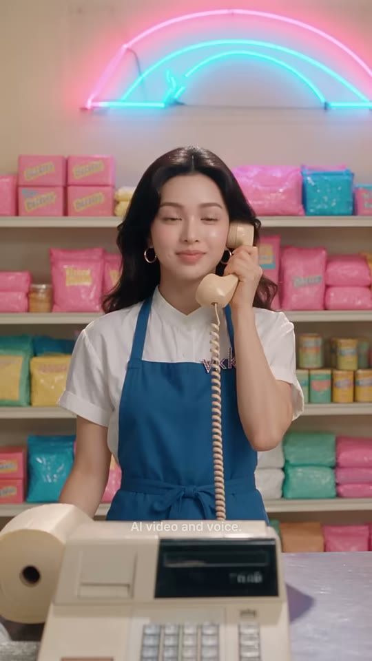
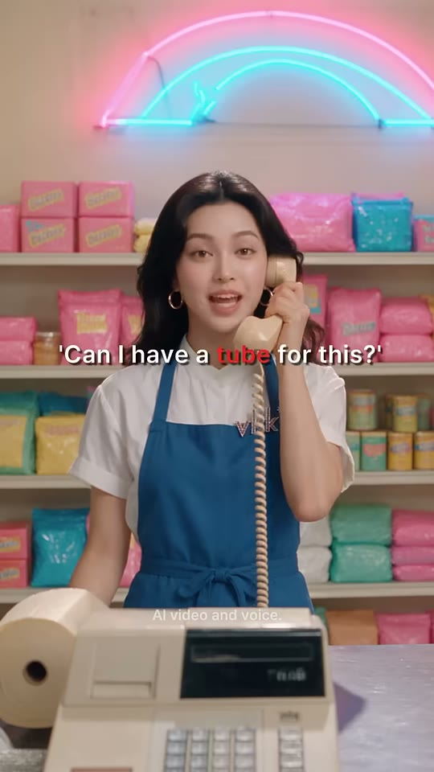
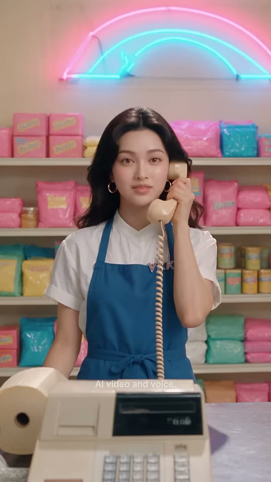
누나
금전등록기(전경)
네온 무지개 사인
샷MS (허리 위)앵글아이레벨 정면카메라고정구도누나 화면 중앙(얼굴 x≈55%, y≈22%). 전경 하단-좌에 크림색 금전등록기가 프레임 하단 35%를 가림. 상단에 핑크·시안 네온 무지개 사인(프레임 상단 0~15%). 배경 파스텔 진열장 대칭.동작수화기를 왼쪽 귀(화면 우측)에 대고 여유로운 미소 → 'Easy'에서 눈을 반쯤 감고 끄덕 → 틀린 문장을 자신만만하게 또박또박 말함. 끝에 입 오므리며 윙크 느낌.대사누나: "Easy. 'Can I have a tube for this?'"화면 자막"Easy"(4.40~4.95) → "'Can I have a tube for this?'"(4.95~6.20, 작은따옴표 포함) · 'tube' = 빨강 #F52828 · 세로 약 46%들어오는 전환하드컷(화자 전환). 전화 통화 샷/리버스샷 — 컷 직후 0.15초 뒤 발화효과음/음악짧은 무음 4.10~4.49 → 대사. BGM 없음(추정)역할오답 제시(잘못된 조언 = 코미디의 씨앗). 빨간 하이라이트로 '틀린 단어' 각인
1순위
minimax-h3대사 립싱크+음성 동시 생성, 무료 — 팀 기본
2순위
kling-v3-omni레퍼런스 캐릭터 일관성 + 립싱크 안정
3순위
seedance-2-5원본 채널이 #seedance25 사용 → 룩/질감 가장 근접(추정)
① 이미지 프롬프트 (원본 클론)Vertical 9:16 medium shot, eye-level, a beautiful Korean woman in her mid-20s, long glossy wavy black hair with a center part, gold hoop earrings, white short-sleeve mandarin-collar shirt under a denim-blue bib apron with a tiny 'vkki' embroidery, holding a cream vintage telephone handset with a coiled cord to her ear, standing behind a shop counter, centered, confident smile, pastel candy-and-snack shop: shelves stacked with pink, teal, yellow and mint snack bags and tins, a pink-and-cyan neon rainbow tube sign on the wall above, a vintage cream cash register in the foreground filling the lower-left foreground and bottom third of the frame, neon sign at the top edge, symmetrical composition, photorealistic cinematic live-action still, glossy K-drama idol beauty aesthetic, retro-pop 1980s Americana 'Neon Showbiz' world, soft high-key diffused key light with gentle rim light, pastel-saturated colors, smooth dewy skin, shallow depth of field, 35mm-50mm lens look, subtle film grain, vertical 9:16, 608x1080
② 영상 프롬프트 (원본 클론)2.08 s, static camera. She smiles, half-closes her eyes on "Easy", then says the sentence proudly with a small nod. Lip-sync, warm confident female voice: "Easy. Can I have a tube for this?" Soft shop ambience, no music.
③ 동물 버전 이미지 프롬프트Vertical 9:16 medium shot, eye-level, Noona-cat, an elegant photoreal anthropomorphic long-haired black cat (Persian mix) with glossy flowing black fur parted in the middle like long hair, warm amber eyes, small gold hoop earrings on her ears, wearing a white short-sleeve mandarin-collar shirt and a denim-blue bib apron with tiny 'vkki' embroidery, holding a cream coiled-cord telephone handset to her ear with her paw, standing behind a shop counter, centered, confident smile, pastel candy-and-snack shop: shelves stacked with pink, teal, yellow and mint snack bags and tins, a pink-and-cyan neon rainbow tube sign on the wall above, a vintage cream cash register in the foreground in the foreground, neon sign at the top edge, photorealistic cinematic live-action still with photoreal anthropomorphic animal actors (real fur, real whiskers, human-sized, standing and gesturing like humans, expressive but not cartoon), same retro-pop 1980s Americana 'Neon Showbiz' world, soft high-key diffused key light with gentle rim light, pastel-saturated colors, shallow depth of field, 35mm-50mm lens look, subtle film grain, vertical 9:16, 608x1080
④ 동물 버전 영상 프롬프트2.08 s, static. Noona-cat smiles smugly, slow blink on "Easy", ears perk, then says proudly: "Easy. Can I have a tube for this?" Lip-sync, warm confident female voice. No music.
네거티브extra fingers, fused or deformed hands, distorted face, asymmetrical eyes, warped or misspelled logo, random text, burned-in subtitles, captions, watermark, UI, blurry, low resolution, over-sharpened, plastic CGI skin, cartoon, anime, 3D toy look, heavy makeup, horizontal frame, letterbox bars, flicker, jitter, morphing props, duplicate characters, extra people in background, mouth out of sync || ANIMAL: extra fingers, fused or deformed hands, distorted face, asymmetrical eyes, warped or misspelled logo, random text, burned-in subtitles, captions, watermark, UI, blurry, low resolution, over-sharpened, plastic CGI skin, cartoon, anime, 3D toy look, heavy makeup, horizontal frame, letterbox bars, flicker, jitter, morphing props, duplicate characters, extra people in background, mouth out of sync, human face, human skin, hybrid human-animal face, realistic human hands on the animal, costume mascot suit, plush toy, stiff taxidermy look, uncanny fur
컷 3 · 오답 실행(틀린 문장을 현지인에게 그대로 말함) — 반복으로 학습 각인
6.33s → 8.63s (2.29s)
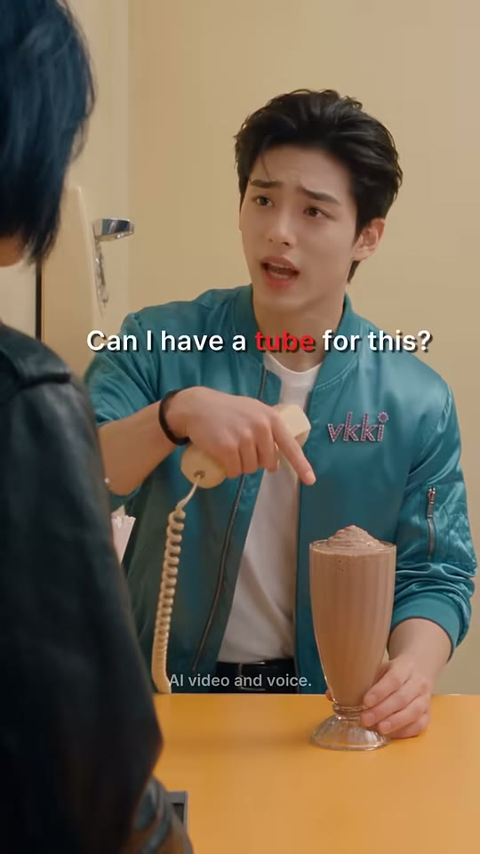

웨이트리스(전경 뒷모습)
소년
밀크셰이크
샷MCU OTS (웨이트리스 어깨 너머)앵글아이레벨, 오버더숄더(전경 좌측 웨이트리스 뒷모습)카메라고정(미세 핸드헬드 흔들림)구도전경 좌측 0~35%를 웨이트리스의 검정 가죽재킷 어깨+블루블랙 단발 뒷머리가 아웃포커스로 가림. 소년은 중앙-우(얼굴 x≈58%, y≈25%). 좌측 벽에 베이지 벽걸이 전화기 + 크롬 손잡이. 밀크셰이크 하단 우측(x≈65%).동작a: 수화기를 귀에 대고 눈 반쯤 감은 채 듣는 중 → m: 수화기를 귀에서 떼 왼손에 쥐고 오른손 검지로 밀크셰이크를 가리키며 눈썹 올려 당당하게 질문. 코일 코드가 벽 전화에서 늘어짐.대사소년: "Can I have a tube for this?"화면 자막"Can I have a tube for this?"(7.30~8.60) · 'tube' 빨강 #F52828 · 세로 약 40%, 가로 중앙보다 약간 우(54%)들어오는 전환하드컷 — 전화 공간(가게)에서 현장(다이너)으로 복귀. 무음 6.23~6.66 사이에 컷효과음/음악BGM 없음. 대사 직전 0.5초 정적역할오답 실행(틀린 문장을 현지인에게 그대로 말함) — 반복으로 학습 각인
1순위
minimax-h3대사 립싱크+음성 동시 생성, 무료 — 팀 기본
2순위
kling-v3-omni레퍼런스 캐릭터 일관성 + 립싱크 안정
3순위
seedance-2-5원본 채널이 #seedance25 사용 → 룩/질감 가장 근접(추정)
① 이미지 프롬프트 (원본 클론)Vertical 9:16 over-the-shoulder medium close-up, eye-level, blurred black leather jacket shoulder and blue-black bob hair of a waitress in the left foreground covering a third of the frame, a handsome Korean young man about 20 years old, tousled dark-brown textured idol hairstyle with soft bangs, fair dewy skin, wearing a glossy teal-turquoise satin bomber jacket with a pink rhinestone 'vkki' logo on his left chest, plain white crew-neck T-shirt, black belt, black trousers, black beaded bracelet on his right wrist, seated at the counter facing camera, holding a cream coiled-cord handset connected to a beige wall phone on the left wall, pointing his right index finger down at a tall fluted soda-fountain glass of chocolate milkshake with thick foamy top and no straw on the mustard-orange counter, eyebrows raised, butter-yellow diner wall with a beige wall-mounted telephone and chrome door handle on the left, mustard-orange laminate counter top in the foreground, photorealistic cinematic live-action still, glossy K-drama idol beauty aesthetic, retro-pop 1980s Americana 'Neon Showbiz' world, soft high-key diffused key light with gentle rim light, pastel-saturated colors, smooth dewy skin, shallow depth of field, 35mm-50mm lens look, subtle film grain, vertical 9:16, 608x1080
② 영상 프롬프트 (원본 클론)2.29 s, static with slight handheld micro-shake. He lowers the handset from his ear, points at the milkshake and asks confidently. Lip-sync, young male voice: "Can I have a tube for this?" Blurred waitress shoulder stays still in the foreground. No music.
③ 동물 버전 이미지 프롬프트Vertical 9:16 over-the-shoulder medium close-up, blurred black leather jacket shoulder and blue-grey bob-shaped fur of a cat waitress in the left foreground, Hamzzi, a photoreal anthropomorphic golden-orange Syrian hamster with a cream belly, chubby cheek pouches, big glossy black eyes, pink nose and tiny pink hands, a fluffy fur tuft on the head styled like an idol haircut, human-sized and upright, wearing the same glossy teal satin bomber jacket with pink rhinestone 'vkki' logo, white T-shirt, black trousers and a black beaded bracelet, seated at the counter, holding a cream coiled-cord handset from a beige wall phone, pointing a tiny paw at a tall fluted soda-fountain glass of chocolate milkshake with thick foamy top and no straw, eyebrows raised, butter-yellow diner wall with a beige wall-mounted telephone and chrome door handle on the left, mustard-orange laminate counter top in the foreground, photorealistic cinematic live-action still with photoreal anthropomorphic animal actors (real fur, real whiskers, human-sized, standing and gesturing like humans, expressive but not cartoon), same retro-pop 1980s Americana 'Neon Showbiz' world, soft high-key diffused key light with gentle rim light, pastel-saturated colors, shallow depth of field, 35mm-50mm lens look, subtle film grain, vertical 9:16, 608x1080
④ 동물 버전 영상 프롬프트2.29 s, static. Hamzzi lowers the handset, points at the milkshake with a tiny paw and asks proudly: "Can I have a tube for this?" Lip-sync, small cute voice, whiskers twitch. No music.
네거티브extra fingers, fused or deformed hands, distorted face, asymmetrical eyes, warped or misspelled logo, random text, burned-in subtitles, captions, watermark, UI, blurry, low resolution, over-sharpened, plastic CGI skin, cartoon, anime, 3D toy look, heavy makeup, horizontal frame, letterbox bars, flicker, jitter, morphing props, duplicate characters, extra people in background, mouth out of sync || ANIMAL: extra fingers, fused or deformed hands, distorted face, asymmetrical eyes, warped or misspelled logo, random text, burned-in subtitles, captions, watermark, UI, blurry, low resolution, over-sharpened, plastic CGI skin, cartoon, anime, 3D toy look, heavy makeup, horizontal frame, letterbox bars, flicker, jitter, morphing props, duplicate characters, extra people in background, mouth out of sync, human face, human skin, hybrid human-animal face, realistic human hands on the animal, costume mascot suit, plush toy, stiff taxidermy look, uncanny fur
컷 4 · 시각 개그 리빌: 단어를 문자 그대로 해석한 결과(빨대 대신 포스터 통)
8.63s → 10.79s (2.17s)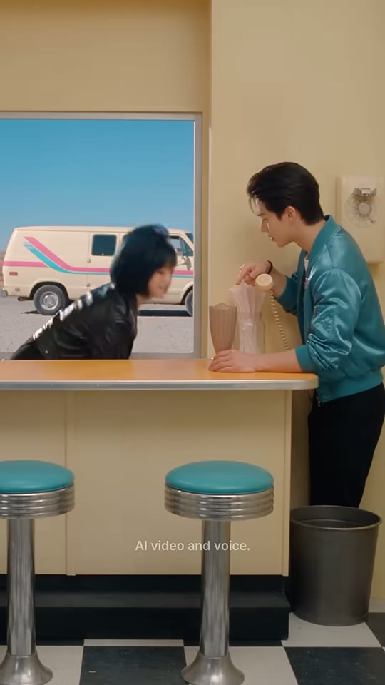
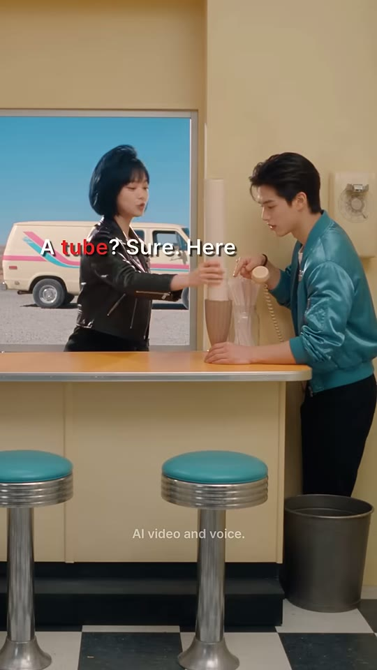
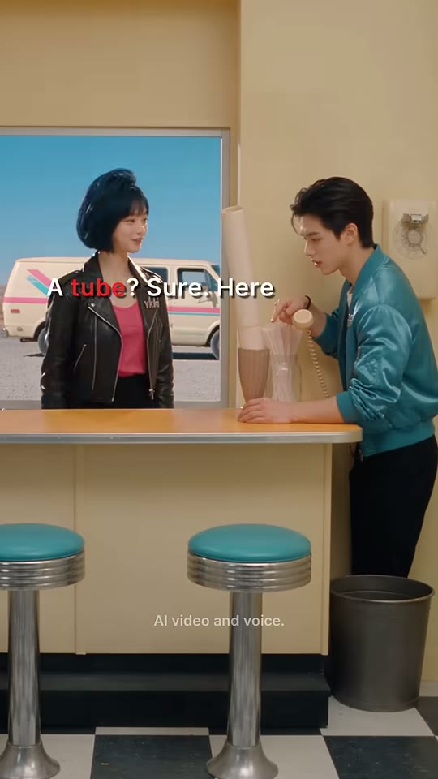
소년
웨이트리스
밀크셰이크+포스터튜브
스툴
샷WS (전신, 세트 전체)앵글아이레벨 정면, 대칭 와이드카메라고정구도세트 전면 대칭 와이드. 좌측 큰 창(x 0~55%, y 17~42%)으로 사막 도로+캠핑밴. 소년은 우측(x 70~95%) 카운터에 옆으로 기대 서서 좌측을 봄. 웨이트리스는 창 앞 카운터 뒤 좌측(x 25~50%)으로 급하게 등장. 하단 30%: 틸 스툴 2개 + 체커보드 바닥 + 우측 쓰레기통. 우측 벽에 벽걸이 전화기.동작a: 웨이트리스가 몸을 숙이며 화면 좌측에서 프레임 인(모션 블러) → m: 긴 크림색 포스터 튜브를 밀크셰이크 잔에 수직으로 꽂아 줌 → z: 무표정하게 튜브를 잡은 채 서 있고 소년은 잔 쪽으로 몸을 숙여 멍하게 봄.대사웨이트리스: "A tube? Sure. Here."화면 자막"A tube? Sure. Here"(9.30~10.79) · 'tube' 빨강 #F52828 · 세로 약 37%, 가로 중앙들어오는 전환하드컷 — MCU→WS 스케일 점프로 '개그 공개(리빌)' 강조효과음/음악포스터 튜브를 잔에 '쿵/툭' 꽂는 효과음(추정, 9.0s 부근) · 무음 8.93~9.42역할시각 개그 리빌: 단어를 문자 그대로 해석한 결과(빨대 대신 포스터 통)
1순위
kling-v3소품(포스터 튜브·빨대) 물리 동작과 2인 동선 안정
2순위
veo-3-1와이드 환경음+짧은 대사 동시 생성
3순위
hailuo-2-3과장된 코믹 동작(튜브 꽂기) 빠른 템포
① 이미지 프롬프트 (원본 클론)Vertical 9:16 symmetrical wide shot of a retro 1950s-style American diner: butter-yellow walls, a large window showing a sunny desert road, clear blue sky and a parked vintage white camper van with pink and teal racing stripes, mustard-orange laminate counter top with a cream front panel, teal vinyl chrome bar stools, black-and-white checkerboard floor, grey metal trash can, beige wall-mounted telephone with a coiled cord, a handsome Korean young man about 20 years old, tousled dark-brown textured idol hairstyle with soft bangs, fair dewy skin, wearing a glossy teal-turquoise satin bomber jacket with a pink rhinestone 'vkki' logo on his left chest, plain white crew-neck T-shirt, black belt, black trousers, black beaded bracelet on his right wrist standing at the right leaning on the counter in profile facing left, a waitress (a young Korean woman with a glossy blue-black chin-length bob haircut with bangs and a small pink flower hair clip on the right side, black leather biker jacket with silver zippers and a pink rhinestone 'vkki' logo on the left chest, hot-pink tank top, black pants) behind the counter in front of the window on the left planting a long cream-colored cardboard poster tube (about 70 cm) standing upright stuck in the milkshake into a tall fluted soda-fountain glass of chocolate milkshake with thick foamy top and no straw, two teal stools and checkerboard floor filling the lower third, eye-level frontal camera, deadpan comedic staging, photorealistic cinematic live-action still, glossy K-drama idol beauty aesthetic, retro-pop 1980s Americana 'Neon Showbiz' world, soft high-key diffused key light with gentle rim light, pastel-saturated colors, smooth dewy skin, shallow depth of field, 35mm-50mm lens look, subtle film grain, vertical 9:16, 608x1080
② 영상 프롬프트 (원본 클론)2.17 s, locked-off wide. The waitress swoops in from the left edge, plants a tall poster tube straight into the milkshake with a thunk and says flatly: "A tube? Sure. Here." (lip-sync, bright casual female voice). The young man leans in, staring blankly at the tube. Diner room tone, small cardboard thunk SFX.
③ 동물 버전 이미지 프롬프트Vertical 9:16 symmetrical wide shot of a retro 1950s-style American diner: butter-yellow walls, a large window showing a sunny desert road, clear blue sky and a parked vintage white camper van with pink and teal racing stripes, mustard-orange laminate counter top with a cream front panel, teal vinyl chrome bar stools, black-and-white checkerboard floor, grey metal trash can, beige wall-mounted telephone with a coiled cord, Hamzzi, a photoreal anthropomorphic golden-orange Syrian hamster with a cream belly, chubby cheek pouches, big glossy black eyes, pink nose and tiny pink hands, a fluffy fur tuft on the head styled like an idol haircut, human-sized and upright, wearing the same glossy teal satin bomber jacket with pink rhinestone 'vkki' logo, white T-shirt, black trousers and a black beaded bracelet standing at the right leaning on the counter in profile, Bobbi, a photoreal anthropomorphic Russian Blue cat with sleek blue-grey fur groomed into a bob-shaped fringe, green eyes, a small pink flower clip by her right ear, black leather biker jacket with a pink rhinestone 'vkki' logo, hot-pink tank top, black pants behind the counter on the left planting a long cream-colored cardboard poster tube (about 70 cm) standing upright stuck in the milkshake into a tall fluted soda-fountain glass of chocolate milkshake with thick foamy top and no straw, teal stools and checkerboard floor in the lower third, eye-level, photorealistic cinematic live-action still with photoreal anthropomorphic animal actors (real fur, real whiskers, human-sized, standing and gesturing like humans, expressive but not cartoon), same retro-pop 1980s Americana 'Neon Showbiz' world, soft high-key diffused key light with gentle rim light, pastel-saturated colors, shallow depth of field, 35mm-50mm lens look, subtle film grain, vertical 9:16, 608x1080
④ 동물 버전 영상 프롬프트2.17 s, locked-off wide. Bobbi the cat swoops in and plants a tall poster tube into the milkshake: "A tube? Sure. Here." (lip-sync, bright casual female voice). Hamzzi leans in, cheeks frozen, ears flat. Cardboard thunk SFX.
네거티브extra fingers, fused or deformed hands, distorted face, asymmetrical eyes, warped or misspelled logo, random text, burned-in subtitles, captions, watermark, UI, blurry, low resolution, over-sharpened, plastic CGI skin, cartoon, anime, 3D toy look, heavy makeup, horizontal frame, letterbox bars, flicker, jitter, morphing props, duplicate characters, extra people in background, mouth out of sync || ANIMAL: extra fingers, fused or deformed hands, distorted face, asymmetrical eyes, warped or misspelled logo, random text, burned-in subtitles, captions, watermark, UI, blurry, low resolution, over-sharpened, plastic CGI skin, cartoon, anime, 3D toy look, heavy makeup, horizontal frame, letterbox bars, flicker, jitter, morphing props, duplicate characters, extra people in background, mouth out of sync, human face, human skin, hybrid human-animal face, realistic human hands on the animal, costume mascot suit, plush toy, stiff taxidermy look, uncanny fur
컷 5 · 리액션/정정 요구 — 갈등 고조
10.79s → 12.33s (1.54s)

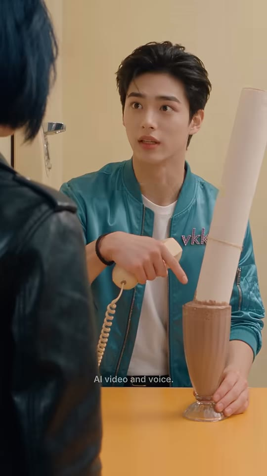
웨이트리스(전경)
소년
포스터 튜브
샷MCU OTS앵글아이레벨 오버더숄더(샷3과 동일 셋업)카메라고정구도샷3과 동일 구도. 소년 중앙-좌(얼굴 x≈50%, y≈17%), 잔에 꽂힌 포스터 튜브가 화면 우측 x≈70~85%에서 대각선으로 프레임 상단까지 뻗음. 좌측 전경 웨이트리스 뒷모습.동작수화기를 든 왼손 그대로, 오른손 검지로 튜브를 가리키며 당황한 표정(눈 크게, 입 벌림) → 고개를 살짝 저으며 정정.대사소년: "No, no — for drinking!"화면 자막"No, no — for drinking!"(10.85~12.33) · 흰색 · 세로 약 39%들어오는 전환하드컷(리액션 컷, 대사 시작과 동시)효과음/음악BGM 없음역할리액션/정정 요구 — 갈등 고조
1순위
minimax-h3대사 립싱크+음성 동시 생성, 무료 — 팀 기본
2순위
kling-v3-omni레퍼런스 캐릭터 일관성 + 립싱크 안정
3순위
seedance-2-5원본 채널이 #seedance25 사용 → 룩/질감 가장 근접(추정)
① 이미지 프롬프트 (원본 클론)Vertical 9:16 over-the-shoulder medium close-up, eye-level, blurred black leather jacket and blue-black bob of a waitress in the left foreground, a handsome Korean young man about 20 years old, tousled dark-brown textured idol hairstyle with soft bangs, fair dewy skin, wearing a glossy teal-turquoise satin bomber jacket with a pink rhinestone 'vkki' logo on his left chest, plain white crew-neck T-shirt, black belt, black trousers, black beaded bracelet on his right wrist, holding a cream handset in his left hand and pointing with his right index finger at a long cream-colored cardboard poster tube (about 70 cm) standing upright stuck in the milkshake on the mustard-orange counter, flustered wide-eyed expression, butter-yellow diner wall with a beige wall-mounted telephone and chrome door handle on the left, mustard-orange laminate counter top in the foreground, photorealistic cinematic live-action still, glossy K-drama idol beauty aesthetic, retro-pop 1980s Americana 'Neon Showbiz' world, soft high-key diffused key light with gentle rim light, pastel-saturated colors, smooth dewy skin, shallow depth of field, 35mm-50mm lens look, subtle film grain, vertical 9:16, 608x1080
② 영상 프롬프트 (원본 클론)1.54 s, static. He points at the poster tube, shakes his head quickly, flustered. Lip-sync, young male voice: "No, no — for drinking!" No music.
③ 동물 버전 이미지 프롬프트Vertical 9:16 over-the-shoulder medium close-up, blurred leather jacket and blue-grey fur of a cat waitress in the left foreground, Hamzzi, a photoreal anthropomorphic golden-orange Syrian hamster with a cream belly, chubby cheek pouches, big glossy black eyes, pink nose and tiny pink hands, a fluffy fur tuft on the head styled like an idol haircut, human-sized and upright, wearing the same glossy teal satin bomber jacket with pink rhinestone 'vkki' logo, white T-shirt, black trousers and a black beaded bracelet, holding the handset and pointing a tiny paw at a long cream-colored cardboard poster tube (about 70 cm) standing upright stuck in the milkshake, flustered wide eyes, butter-yellow diner wall with a beige wall-mounted telephone and chrome door handle on the left, mustard-orange laminate counter top in the foreground, photorealistic cinematic live-action still with photoreal anthropomorphic animal actors (real fur, real whiskers, human-sized, standing and gesturing like humans, expressive but not cartoon), same retro-pop 1980s Americana 'Neon Showbiz' world, soft high-key diffused key light with gentle rim light, pastel-saturated colors, shallow depth of field, 35mm-50mm lens look, subtle film grain, vertical 9:16, 608x1080
④ 동물 버전 영상 프롬프트1.54 s, static. Hamzzi shakes his head fast, cheeks wobbling, points at the tube: "No, no — for drinking!" Lip-sync, small cute voice. No music.
네거티브extra fingers, fused or deformed hands, distorted face, asymmetrical eyes, warped or misspelled logo, random text, burned-in subtitles, captions, watermark, UI, blurry, low resolution, over-sharpened, plastic CGI skin, cartoon, anime, 3D toy look, heavy makeup, horizontal frame, letterbox bars, flicker, jitter, morphing props, duplicate characters, extra people in background, mouth out of sync || ANIMAL: extra fingers, fused or deformed hands, distorted face, asymmetrical eyes, warped or misspelled logo, random text, burned-in subtitles, captions, watermark, UI, blurry, low resolution, over-sharpened, plastic CGI skin, cartoon, anime, 3D toy look, heavy makeup, horizontal frame, letterbox bars, flicker, jitter, morphing props, duplicate characters, extra people in background, mouth out of sync, human face, human skin, hybrid human-animal face, realistic human hands on the animal, costume mascot suit, plush toy, stiff taxidermy look, uncanny fur
컷 6 · 교정자 등장 — 정답 직전 '셋업' (Say — 로 끊어 다음 컷 기대감)
12.33s → 14.08s (1.75s)


웨이트리스
포스터 튜브+잔
빨대 유리병
소년 손
샷MS (허리 위)앵글아이레벨 리버스샷(소년 시점 약간 좌측)카메라고정구도웨이트리스 중앙-좌(얼굴 x≈40%, y≈20%). 우측 x≈60~72%에 포스터 튜브(잔에 꽂힌 채) 수직으로 프레임 위까지. 우측 끝에 종이 빨대가 담긴 유리병. 하단 우측에 소년 손 일부. 배경 창밖 붉은 메사 사막+파란 하늘.동작a: 눈을 찡그리며 'Oh—' 깨닫는 표정 → m: 소년을 바라보며 설명 모드 → z: 입꼬리 살짝 올린 채 다음 말 준비.대사웨이트리스: "Oh. To drink it. Say—"화면 자막"Oh. To drink it. Say —"(12.40~14.05) · 흰색 · 세로 약 37%들어오는 전환하드컷(화자 전환 리버스샷)효과음/음악BGM 없음역할교정자 등장 — 정답 직전 '셋업' (Say — 로 끊어 다음 컷 기대감)
1순위
minimax-h3대사 립싱크+음성 동시 생성, 무료 — 팀 기본
2순위
kling-v3-omni레퍼런스 캐릭터 일관성 + 립싱크 안정
3순위
seedance-2-5원본 채널이 #seedance25 사용 → 룩/질감 가장 근접(추정)
① 이미지 프롬프트 (원본 클론)Vertical 9:16 medium shot, eye-level reverse angle, a young Korean woman with a glossy blue-black chin-length bob haircut with bangs and a small pink flower hair clip on the right side, black leather biker jacket with silver zippers and a pink rhinestone 'vkki' logo on the left chest, hot-pink tank top, black pants, standing behind a mustard-orange diner counter, a long cream-colored cardboard poster tube (about 70 cm) standing upright stuck in the milkshake in a milkshake glass to her right, a glass jar of white paper straws at the right edge, a customer's hand at the bottom-right edge, a window behind her showing red Monument-Valley-style desert mesas under a clear blue sky, photorealistic cinematic live-action still, glossy K-drama idol beauty aesthetic, retro-pop 1980s Americana 'Neon Showbiz' world, soft high-key diffused key light with gentle rim light, pastel-saturated colors, smooth dewy skin, shallow depth of field, 35mm-50mm lens look, subtle film grain, vertical 9:16, 608x1080
② 영상 프롬프트 (원본 클론)1.75 s, static. She squints as she realizes, then explains patiently. Lip-sync, bright casual female voice: "Oh. To drink it. Say—" Hold on her expectant face at the end. No music.
③ 동물 버전 이미지 프롬프트Vertical 9:16 medium shot, eye-level reverse angle, Bobbi, a photoreal anthropomorphic Russian Blue cat with sleek blue-grey fur groomed into a bob-shaped fringe, green eyes, a small pink flower clip by her right ear, black leather biker jacket with a pink rhinestone 'vkki' logo, hot-pink tank top, black pants, behind a mustard-orange diner counter, a long cream-colored cardboard poster tube (about 70 cm) standing upright stuck in the milkshake in a milkshake glass to her right, a jar of paper straws at the right edge, a small hamster paw at the bottom-right edge, a window behind her showing red Monument-Valley-style desert mesas under a clear blue sky, photorealistic cinematic live-action still with photoreal anthropomorphic animal actors (real fur, real whiskers, human-sized, standing and gesturing like humans, expressive but not cartoon), same retro-pop 1980s Americana 'Neon Showbiz' world, soft high-key diffused key light with gentle rim light, pastel-saturated colors, shallow depth of field, 35mm-50mm lens look, subtle film grain, vertical 9:16, 608x1080
④ 동물 버전 영상 프롬프트1.75 s, static. Bobbi squints, ears rotate, then explains: "Oh. To drink it. Say—" Lip-sync, bright casual female voice. No music.
네거티브extra fingers, fused or deformed hands, distorted face, asymmetrical eyes, warped or misspelled logo, random text, burned-in subtitles, captions, watermark, UI, blurry, low resolution, over-sharpened, plastic CGI skin, cartoon, anime, 3D toy look, heavy makeup, horizontal frame, letterbox bars, flicker, jitter, morphing props, duplicate characters, extra people in background, mouth out of sync || ANIMAL: extra fingers, fused or deformed hands, distorted face, asymmetrical eyes, warped or misspelled logo, random text, burned-in subtitles, captions, watermark, UI, blurry, low resolution, over-sharpened, plastic CGI skin, cartoon, anime, 3D toy look, heavy makeup, horizontal frame, letterbox bars, flicker, jitter, morphing props, duplicate characters, extra people in background, mouth out of sync, human face, human skin, hybrid human-animal face, realistic human hands on the animal, costume mascot suit, plush toy, stiff taxidermy look, uncanny fur
컷 7 · 정답 제시(노란 하이라이트) + 의상 로고로 채널 브랜딩 노출
14.08s → 15.17s (1.08s)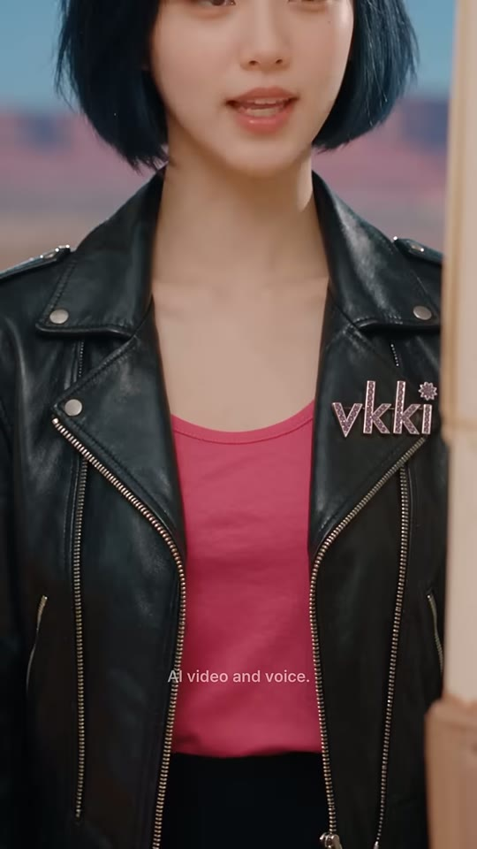


웨이트리스 상반신
vkki 로고
포스터 튜브(블러)
샷CU (입~가슴, 얼굴 상단 코 위 크롭)앵글아이레벨 정면카메라고정구도프레임 상단 0~20%에 입·턱, 중앙 전체를 검정 가죽재킷+핫핑크 탱크톱이 채움. 오른쪽 가슴(화면 우측 x≈70~92%, y≈47~57%)에 핑크 큐빅 'vkki' 로고가 선명. 우측 끝에 아웃포커스 포스터 튜브 세로선.동작입만 보이는 상태로 정답 문장을 또박또박 발음(입모양 학습용) → 끝에 입 다물고 미소.대사웨이트리스: "Can I have a straw?"화면 자막"Can I have a straw?"(14.00~15.10) · 'straw' = 노랑 #F7F20A · 세로 약 30%들어오는 전환하드컷 — 'Say —' 끊긴 직후 입 클로즈업으로 점프(스냅 줌 효과)효과음/음악BGM 없음역할정답 제시(노란 하이라이트) + 의상 로고로 채널 브랜딩 노출
1순위
seedance-2-5클로즈업 미세표정·피부 질감, 원본 모델 추정
2순위
minimax-h3립싱크 대사 + 무료
3순위
kling-v3-omni입모양 정확도 백업
① 이미지 프롬프트 (원본 클론)Vertical 9:16 close-up framed from the tip of the nose down to the waist, a young Korean woman with a glossy blue-black chin-length bob haircut with bangs and a small pink flower hair clip on the right side, black leather biker jacket with silver zippers and a pink rhinestone 'vkki' logo on the left chest, hot-pink tank top, black pants, only her lips and chin visible at the top edge, black leather biker jacket and hot-pink tank top filling the frame, pink rhinestone 'vkki' logo sharp on the jacket chest at right, a blurred cream poster tube edge at the right border, blurred desert sky behind, eye-level, photorealistic cinematic live-action still, glossy K-drama idol beauty aesthetic, retro-pop 1980s Americana 'Neon Showbiz' world, soft high-key diffused key light with gentle rim light, pastel-saturated colors, smooth dewy skin, shallow depth of field, 35mm-50mm lens look, subtle film grain, vertical 9:16, 608x1080
② 영상 프롬프트 (원본 클론)1.08 s, static. Crisp articulation, clear lip shapes for learners. Lip-sync, bright female voice: "Can I have a straw?" Mouth closes into a small smile at the end. No music.
③ 동물 버전 이미지 프롬프트Vertical 9:16 close-up from the nose down to the waist, Bobbi, a photoreal anthropomorphic Russian Blue cat with sleek blue-grey fur groomed into a bob-shaped fringe, green eyes, a small pink flower clip by her right ear, black leather biker jacket with a pink rhinestone 'vkki' logo, hot-pink tank top, black pants, only her cat muzzle, whiskers and chin visible at the top edge, black leather jacket with pink rhinestone 'vkki' logo and hot-pink tank top filling the frame, blurred poster tube at right edge, photorealistic cinematic live-action still with photoreal anthropomorphic animal actors (real fur, real whiskers, human-sized, standing and gesturing like humans, expressive but not cartoon), same retro-pop 1980s Americana 'Neon Showbiz' world, soft high-key diffused key light with gentle rim light, pastel-saturated colors, shallow depth of field, 35mm-50mm lens look, subtle film grain, vertical 9:16, 608x1080
④ 동물 버전 영상 프롬프트1.08 s, static. Bobbi's muzzle articulates clearly: "Can I have a straw?" Lip-sync, whiskers move with each word. No music.
네거티브extra fingers, fused or deformed hands, distorted face, asymmetrical eyes, warped or misspelled logo, random text, burned-in subtitles, captions, watermark, UI, blurry, low resolution, over-sharpened, plastic CGI skin, cartoon, anime, 3D toy look, heavy makeup, horizontal frame, letterbox bars, flicker, jitter, morphing props, duplicate characters, extra people in background, mouth out of sync || ANIMAL: extra fingers, fused or deformed hands, distorted face, asymmetrical eyes, warped or misspelled logo, random text, burned-in subtitles, captions, watermark, UI, blurry, low resolution, over-sharpened, plastic CGI skin, cartoon, anime, 3D toy look, heavy makeup, horizontal frame, letterbox bars, flicker, jitter, morphing props, duplicate characters, extra people in background, mouth out of sync, human face, human skin, hybrid human-animal face, realistic human hands on the animal, costume mascot suit, plush toy, stiff taxidermy look, uncanny fur
컷 8 · 따라 말하기(쉐도잉) — 시청자 모방 유도
15.17s → 16.54s (1.38s)


웨이트리스(전경)
소년
포스터 튜브
샷MCU OTS앵글아이레벨 OTS(샷3·5와 동일)카메라고정구도샷5와 동일. 수화기는 이제 카운터 위 잔 왼쪽에 놓여 있음(하단 x≈45%). 소년 얼굴 x≈55%, y≈20%.동작양손을 카운터에 내려놓고 눈을 크게 뜬 채 또박또박 따라 말함 → z: 입 벌리고 '아하' 깨달음.대사소년: "Can I have a straw?"화면 자막"Can I have a straw?"(15.48~16.54) · 'straw' 노랑 #F7F20A · 세로 약 40%들어오는 전환하드컷 (무음 14.99~15.56 중간에 컷 → 0.3초 정적 후 발화)효과음/음악BGM 없음역할따라 말하기(쉐도잉) — 시청자 모방 유도
1순위
minimax-h3대사 립싱크+음성 동시 생성, 무료 — 팀 기본
2순위
kling-v3-omni레퍼런스 캐릭터 일관성 + 립싱크 안정
3순위
seedance-2-5원본 채널이 #seedance25 사용 → 룩/질감 가장 근접(추정)
① 이미지 프롬프트 (원본 클론)Vertical 9:16 over-the-shoulder medium close-up, blurred black leather jacket and blue-black bob in the left foreground, a handsome Korean young man about 20 years old, tousled dark-brown textured idol hairstyle with soft bangs, fair dewy skin, wearing a glossy teal-turquoise satin bomber jacket with a pink rhinestone 'vkki' logo on his left chest, plain white crew-neck T-shirt, black belt, black trousers, black beaded bracelet on his right wrist, hands resting on the mustard-orange counter next to a cream telephone handset lying on the counter, a long cream-colored cardboard poster tube (about 70 cm) standing upright stuck in the milkshake at right, wide attentive eyes, butter-yellow diner wall with a beige wall-mounted telephone and chrome door handle on the left, mustard-orange laminate counter top in the foreground, photorealistic cinematic live-action still, glossy K-drama idol beauty aesthetic, retro-pop 1980s Americana 'Neon Showbiz' world, soft high-key diffused key light with gentle rim light, pastel-saturated colors, smooth dewy skin, shallow depth of field, 35mm-50mm lens look, subtle film grain, vertical 9:16, 608x1080
② 영상 프롬프트 (원본 클론)1.38 s, static. He repeats carefully, eyes wide. Lip-sync, young male voice: "Can I have a straw?" Ends with mouth slightly open in realization. No music.
③ 동물 버전 이미지 프롬프트Vertical 9:16 over-the-shoulder medium close-up, blurred leather jacket and blue-grey fur in the left foreground, Hamzzi, a photoreal anthropomorphic golden-orange Syrian hamster with a cream belly, chubby cheek pouches, big glossy black eyes, pink nose and tiny pink hands, a fluffy fur tuft on the head styled like an idol haircut, human-sized and upright, wearing the same glossy teal satin bomber jacket with pink rhinestone 'vkki' logo, white T-shirt, black trousers and a black beaded bracelet, tiny paws on the counter beside a cream handset lying down, a long cream-colored cardboard poster tube (about 70 cm) standing upright stuck in the milkshake at right, wide glossy eyes, butter-yellow diner wall with a beige wall-mounted telephone and chrome door handle on the left, mustard-orange laminate counter top in the foreground, photorealistic cinematic live-action still with photoreal anthropomorphic animal actors (real fur, real whiskers, human-sized, standing and gesturing like humans, expressive but not cartoon), same retro-pop 1980s Americana 'Neon Showbiz' world, soft high-key diffused key light with gentle rim light, pastel-saturated colors, shallow depth of field, 35mm-50mm lens look, subtle film grain, vertical 9:16, 608x1080
④ 동물 버전 영상 프롬프트1.38 s, static. Hamzzi repeats slowly: "Can I have a straw?" Lip-sync, small cute voice, ends with a tiny gasp. No music.
네거티브extra fingers, fused or deformed hands, distorted face, asymmetrical eyes, warped or misspelled logo, random text, burned-in subtitles, captions, watermark, UI, blurry, low resolution, over-sharpened, plastic CGI skin, cartoon, anime, 3D toy look, heavy makeup, horizontal frame, letterbox bars, flicker, jitter, morphing props, duplicate characters, extra people in background, mouth out of sync || ANIMAL: extra fingers, fused or deformed hands, distorted face, asymmetrical eyes, warped or misspelled logo, random text, burned-in subtitles, captions, watermark, UI, blurry, low resolution, over-sharpened, plastic CGI skin, cartoon, anime, 3D toy look, heavy makeup, horizontal frame, letterbox bars, flicker, jitter, morphing props, duplicate characters, extra people in background, mouth out of sync, human face, human skin, hybrid human-animal face, realistic human hands on the animal, costume mascot suit, plush toy, stiff taxidermy look, uncanny fur
컷 9 · 빈칸 퀴즈 — 시청자가 속으로 'straw' 채우게 하는 참여 장치(댓글 유도)
16.54s → 17.46s (0.92s)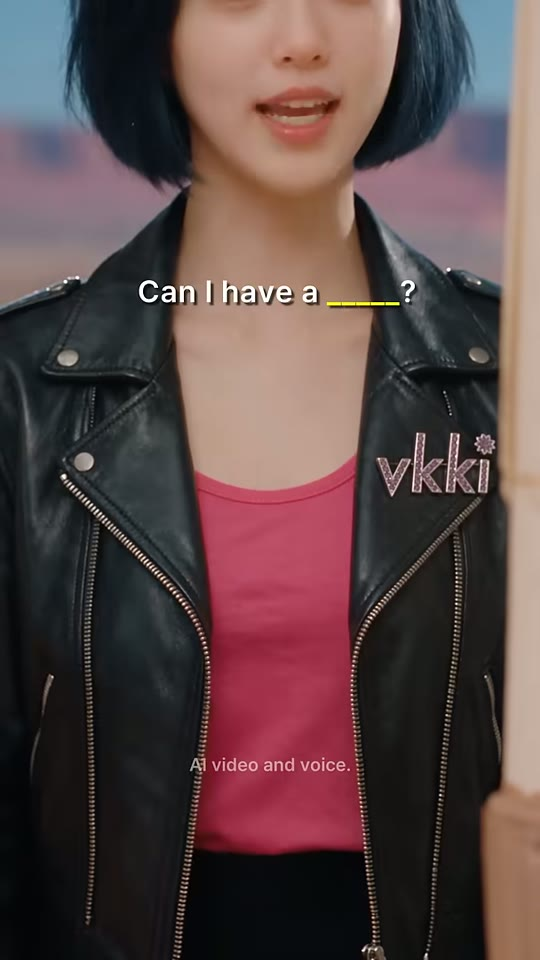

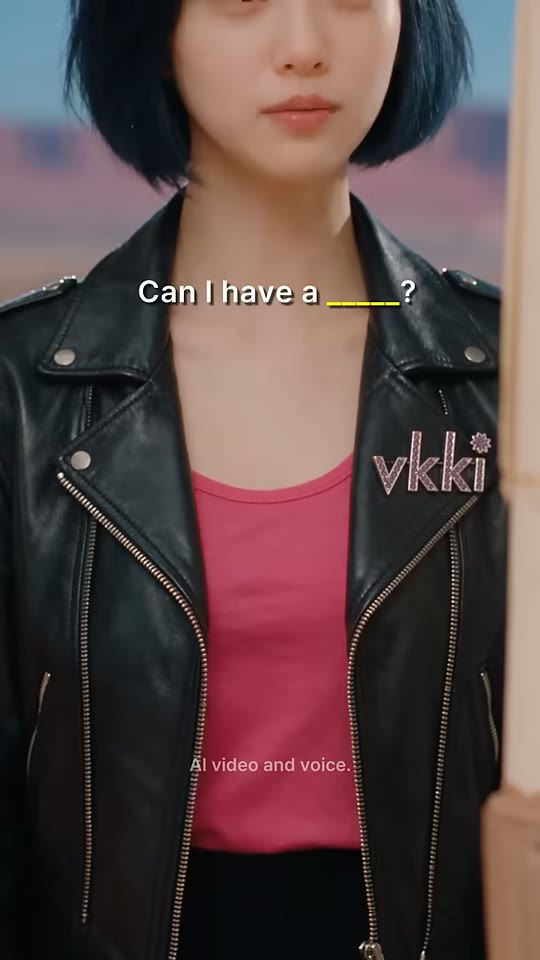
웨이트리스 상반신
vkki 로고
샷CU (입~가슴, 샷7과 동일)앵글아이레벨 정면카메라고정구도샷7과 동일 셋업(재사용 가능). 자막만 빈칸 퀴즈.동작입만 보이는 상태로 문장을 다시 말함(추정) — 입모양 강조, 끝에 입 다묾.대사웨이트리스: "Can I have a… straw?" (추정 — 자동자막 미표기, 오디오상 연속 발화 존재)화면 자막"Can I have a _____?"(16.54~17.46) · 빈칸 밑줄 '_____' 노랑 #F7F20A · 세로 약 30%들어오는 전환하드컷(동일 셋업 재등장 = 반복 리듬)효과음/음악BGM 없음역할빈칸 퀴즈 — 시청자가 속으로 'straw' 채우게 하는 참여 장치(댓글 유도)
1순위
seedance-2-5클로즈업 미세표정·피부 질감, 원본 모델 추정
2순위
minimax-h3립싱크 대사 + 무료
3순위
kling-v3-omni입모양 정확도 백업
① 이미지 프롬프트 (원본 클론)Vertical 9:16 close-up framed from the tip of the nose down to the waist, a young Korean woman with a glossy blue-black chin-length bob haircut with bangs and a small pink flower hair clip on the right side, black leather biker jacket with silver zippers and a pink rhinestone 'vkki' logo on the left chest, hot-pink tank top, black pants, lips and chin at the top edge, black leather biker jacket with pink rhinestone 'vkki' logo and hot-pink tank top filling the frame, blurred poster tube edge at the right border, photorealistic cinematic live-action still, glossy K-drama idol beauty aesthetic, retro-pop 1980s Americana 'Neon Showbiz' world, soft high-key diffused key light with gentle rim light, pastel-saturated colors, smooth dewy skin, shallow depth of field, 35mm-50mm lens look, subtle film grain, vertical 9:16, 608x1080
② 영상 프롬프트 (원본 클론)0.92 s, static. She mouths the sentence again with clear, exaggerated lip shapes: "Can I have a... straw?" Lip-sync, bright female voice. No music.
③ 동물 버전 이미지 프롬프트Vertical 9:16 close-up from the nose down to the waist, Bobbi, a photoreal anthropomorphic Russian Blue cat with sleek blue-grey fur groomed into a bob-shaped fringe, green eyes, a small pink flower clip by her right ear, black leather biker jacket with a pink rhinestone 'vkki' logo, hot-pink tank top, black pants, muzzle and chin at the top edge, leather jacket with pink 'vkki' logo filling the frame, photorealistic cinematic live-action still with photoreal anthropomorphic animal actors (real fur, real whiskers, human-sized, standing and gesturing like humans, expressive but not cartoon), same retro-pop 1980s Americana 'Neon Showbiz' world, soft high-key diffused key light with gentle rim light, pastel-saturated colors, shallow depth of field, 35mm-50mm lens look, subtle film grain, vertical 9:16, 608x1080
④ 동물 버전 영상 프롬프트0.92 s, static. Bobbi's muzzle repeats: "Can I have a... straw?" Lip-sync. No music.
네거티브extra fingers, fused or deformed hands, distorted face, asymmetrical eyes, warped or misspelled logo, random text, burned-in subtitles, captions, watermark, UI, blurry, low resolution, over-sharpened, plastic CGI skin, cartoon, anime, 3D toy look, heavy makeup, horizontal frame, letterbox bars, flicker, jitter, morphing props, duplicate characters, extra people in background, mouth out of sync || ANIMAL: extra fingers, fused or deformed hands, distorted face, asymmetrical eyes, warped or misspelled logo, random text, burned-in subtitles, captions, watermark, UI, blurry, low resolution, over-sharpened, plastic CGI skin, cartoon, anime, 3D toy look, heavy makeup, horizontal frame, letterbox bars, flicker, jitter, morphing props, duplicate characters, extra people in background, mouth out of sync, human face, human skin, hybrid human-animal face, realistic human hands on the animal, costume mascot suit, plush toy, stiff taxidermy look, uncanny fur
컷 10 · 퀴즈 반복 — 2회 연속 빈칸으로 기억 고정
17.46s → 18.54s (1.08s)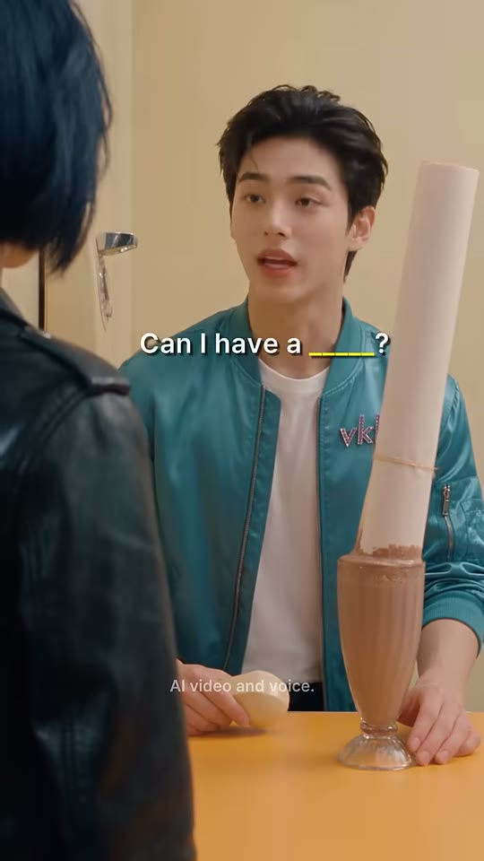

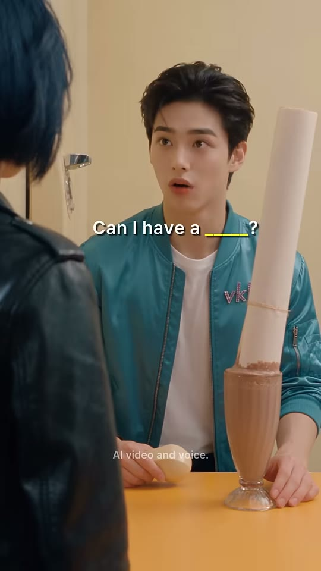
웨이트리스(전경)
소년
포스터 튜브
샷MCU OTS앵글아이레벨 OTS(샷8과 동일)카메라고정구도샷8과 동일 셋업. 소년 얼굴 x≈55%, y≈18%.동작소년이 한 번 더 따라 말함(추정), 눈썹을 올리고 입을 크게 벌리며 확신.대사소년: "Can I have a… straw?" (추정)화면 자막"Can I have a _____?"(17.46~18.54) · 빈칸 노랑 · 세로 약 40%들어오는 전환하드컷(핑퐁 반복)효과음/음악BGM 없음 · 18.75~19.27 무음으로 다음 컷 개그 준비역할퀴즈 반복 — 2회 연속 빈칸으로 기억 고정
1순위
minimax-h3대사 립싱크+음성 동시 생성, 무료 — 팀 기본
2순위
kling-v3-omni레퍼런스 캐릭터 일관성 + 립싱크 안정
3순위
seedance-2-5원본 채널이 #seedance25 사용 → 룩/질감 가장 근접(추정)
① 이미지 프롬프트 (원본 클론)Vertical 9:16 over-the-shoulder medium close-up, blurred black leather jacket in the left foreground, a handsome Korean young man about 20 years old, tousled dark-brown textured idol hairstyle with soft bangs, fair dewy skin, wearing a glossy teal-turquoise satin bomber jacket with a pink rhinestone 'vkki' logo on his left chest, plain white crew-neck T-shirt, black belt, black trousers, black beaded bracelet on his right wrist, hands on the counter, eyebrows raised confidently, a long cream-colored cardboard poster tube (about 70 cm) standing upright stuck in the milkshake at right, butter-yellow diner wall with a beige wall-mounted telephone and chrome door handle on the left, mustard-orange laminate counter top in the foreground, photorealistic cinematic live-action still, glossy K-drama idol beauty aesthetic, retro-pop 1980s Americana 'Neon Showbiz' world, soft high-key diffused key light with gentle rim light, pastel-saturated colors, smooth dewy skin, shallow depth of field, 35mm-50mm lens look, subtle film grain, vertical 9:16, 608x1080
② 영상 프롬프트 (원본 클론)1.08 s, static. He repeats with growing confidence, eyebrows up: "Can I have a... straw?" Lip-sync, young male voice. No music.
③ 동물 버전 이미지 프롬프트Vertical 9:16 over-the-shoulder medium close-up, blurred leather jacket in the left foreground, Hamzzi, a photoreal anthropomorphic golden-orange Syrian hamster with a cream belly, chubby cheek pouches, big glossy black eyes, pink nose and tiny pink hands, a fluffy fur tuft on the head styled like an idol haircut, human-sized and upright, wearing the same glossy teal satin bomber jacket with pink rhinestone 'vkki' logo, white T-shirt, black trousers and a black beaded bracelet, paws on the counter, confident raised brows, a long cream-colored cardboard poster tube (about 70 cm) standing upright stuck in the milkshake at right, butter-yellow diner wall with a beige wall-mounted telephone and chrome door handle on the left, mustard-orange laminate counter top in the foreground, photorealistic cinematic live-action still with photoreal anthropomorphic animal actors (real fur, real whiskers, human-sized, standing and gesturing like humans, expressive but not cartoon), same retro-pop 1980s Americana 'Neon Showbiz' world, soft high-key diffused key light with gentle rim light, pastel-saturated colors, shallow depth of field, 35mm-50mm lens look, subtle film grain, vertical 9:16, 608x1080
④ 동물 버전 영상 프롬프트1.08 s, static. Hamzzi repeats confidently: "Can I have a... straw?" Lip-sync, small cute voice, ears perk up. No music.
네거티브extra fingers, fused or deformed hands, distorted face, asymmetrical eyes, warped or misspelled logo, random text, burned-in subtitles, captions, watermark, UI, blurry, low resolution, over-sharpened, plastic CGI skin, cartoon, anime, 3D toy look, heavy makeup, horizontal frame, letterbox bars, flicker, jitter, morphing props, duplicate characters, extra people in background, mouth out of sync || ANIMAL: extra fingers, fused or deformed hands, distorted face, asymmetrical eyes, warped or misspelled logo, random text, burned-in subtitles, captions, watermark, UI, blurry, low resolution, over-sharpened, plastic CGI skin, cartoon, anime, 3D toy look, heavy makeup, horizontal frame, letterbox bars, flicker, jitter, morphing props, duplicate characters, extra people in background, mouth out of sync, human face, human skin, hybrid human-animal face, realistic human hands on the animal, costume mascot suit, plush toy, stiff taxidermy look, uncanny fur
컷 11 · 페이오프 — 올바른 단어 = 올바른 결과(시각적 보상)
18.54s → 21.25s (2.71s)


웨이트리스
소년
잔+빨대병
샷WS (샷4와 동일 대칭 와이드)앵글아이레벨 정면카메라고정구도샷4와 동일 셋업. 웨이트리스 좌(x≈20~42%), 소년 우(x≈60~95%)가 잔 쪽으로 허리 숙임. 잔 2개와 빨대병이 카운터 중앙.동작a: 웨이트리스가 포스터 튜브를 뽑아 들어 올림 → m: 빨대병에서 종이 빨대를 꺼내 잔에 꽂음 → z: 소년이 허리를 숙여 빨대로 쪽 빨아 마시고, 웨이트리스는 팔짱 느낌으로 서서 봄.대사웨이트리스: "That's a straw."화면 자막"That's a straw"(19.90~20.95) · 'straw' 노랑 #F7F20A · 세로 약 38%, 가로 약 36%(웨이트리스 머리 옆 — 화자 앵커)들어오는 전환하드컷(스케일 점프 MCU→WS, 해결 리빌)효과음/음악튜브 뽑는 마찰음 + 빨대 꽂는 소리 + 쪽 빠는 소리(추정)역할페이오프 — 올바른 단어 = 올바른 결과(시각적 보상)
1순위
kling-v3소품(포스터 튜브·빨대) 물리 동작과 2인 동선 안정
2순위
veo-3-1와이드 환경음+짧은 대사 동시 생성
3순위
hailuo-2-3과장된 코믹 동작(튜브 꽂기) 빠른 템포
① 이미지 프롬프트 (원본 클론)Vertical 9:16 symmetrical wide shot of a retro 1950s-style American diner: butter-yellow walls, a large window showing a sunny desert road, clear blue sky and a parked vintage white camper van with pink and teal racing stripes, mustard-orange laminate counter top with a cream front panel, teal vinyl chrome bar stools, black-and-white checkerboard floor, grey metal trash can, beige wall-mounted telephone with a coiled cord, a waitress (a young Korean woman with a glossy blue-black chin-length bob haircut with bangs and a small pink flower hair clip on the right side, black leather biker jacket with silver zippers and a pink rhinestone 'vkki' logo on the left chest, hot-pink tank top, black pants) behind the counter on the left pulling a tall cream poster tube out of a milkshake glass, a glass jar of white paper straws on the counter, a handsome Korean young man about 20 years old, tousled dark-brown textured idol hairstyle with soft bangs, fair dewy skin, wearing a glossy teal-turquoise satin bomber jacket with a pink rhinestone 'vkki' logo on his left chest, plain white crew-neck T-shirt, black belt, black trousers, black beaded bracelet on his right wrist on the right bending down toward his milkshake, eye-level locked-off frontal camera, photorealistic cinematic live-action still, glossy K-drama idol beauty aesthetic, retro-pop 1980s Americana 'Neon Showbiz' world, soft high-key diffused key light with gentle rim light, pastel-saturated colors, smooth dewy skin, shallow depth of field, 35mm-50mm lens look, subtle film grain, vertical 9:16, 608x1080
② 영상 프롬프트 (원본 클론)2.71 s, locked-off wide. The waitress pulls the poster tube out, grabs a paper straw from the jar and pops it into the shake, saying: "That's a straw." (lip-sync, bright casual female voice). The young man bends down and happily sips through the straw. Cardboard slide, straw clink and slurp SFX, room tone.
③ 동물 버전 이미지 프롬프트Vertical 9:16 symmetrical wide shot of a retro 1950s-style American diner: butter-yellow walls, a large window showing a sunny desert road, clear blue sky and a parked vintage white camper van with pink and teal racing stripes, mustard-orange laminate counter top with a cream front panel, teal vinyl chrome bar stools, black-and-white checkerboard floor, grey metal trash can, beige wall-mounted telephone with a coiled cord, Bobbi, a photoreal anthropomorphic Russian Blue cat with sleek blue-grey fur groomed into a bob-shaped fringe, green eyes, a small pink flower clip by her right ear, black leather biker jacket with a pink rhinestone 'vkki' logo, hot-pink tank top, black pants behind the counter on the left pulling a tall poster tube out of a milkshake glass, a jar of paper straws on the counter, Hamzzi, a photoreal anthropomorphic golden-orange Syrian hamster with a cream belly, chubby cheek pouches, big glossy black eyes, pink nose and tiny pink hands, a fluffy fur tuft on the head styled like an idol haircut, human-sized and upright, wearing the same glossy teal satin bomber jacket with pink rhinestone 'vkki' logo, white T-shirt, black trousers and a black beaded bracelet on the right bending toward the milkshake, eye-level locked-off, photorealistic cinematic live-action still with photoreal anthropomorphic animal actors (real fur, real whiskers, human-sized, standing and gesturing like humans, expressive but not cartoon), same retro-pop 1980s Americana 'Neon Showbiz' world, soft high-key diffused key light with gentle rim light, pastel-saturated colors, shallow depth of field, 35mm-50mm lens look, subtle film grain, vertical 9:16, 608x1080
④ 동물 버전 영상 프롬프트2.71 s, locked-off wide. Bobbi yanks the poster tube out, pops a paper straw in: "That's a straw." (lip-sync). Hamzzi bends down and sips, cheeks inflating happily. Slurp SFX.
네거티브extra fingers, fused or deformed hands, distorted face, asymmetrical eyes, warped or misspelled logo, random text, burned-in subtitles, captions, watermark, UI, blurry, low resolution, over-sharpened, plastic CGI skin, cartoon, anime, 3D toy look, heavy makeup, horizontal frame, letterbox bars, flicker, jitter, morphing props, duplicate characters, extra people in background, mouth out of sync || ANIMAL: extra fingers, fused or deformed hands, distorted face, asymmetrical eyes, warped or misspelled logo, random text, burned-in subtitles, captions, watermark, UI, blurry, low resolution, over-sharpened, plastic CGI skin, cartoon, anime, 3D toy look, heavy makeup, horizontal frame, letterbox bars, flicker, jitter, morphing props, duplicate characters, extra people in background, mouth out of sync, human face, human skin, hybrid human-animal face, realistic human hands on the animal, costume mascot suit, plush toy, stiff taxidermy look, uncanny fur
컷 12 · 펀치라인 + 루프 장치(시리즈 고정 엔딩 '오리발 누나')
21.25s → 23.13s (1.88s)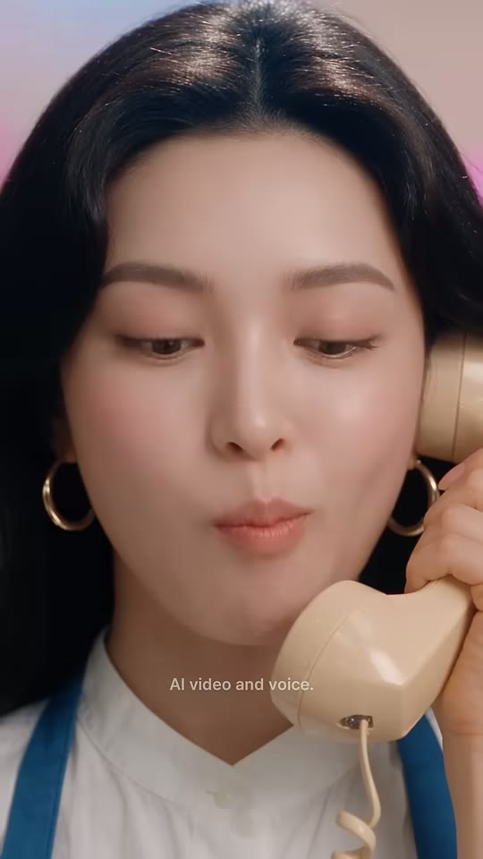

누나 얼굴
수화기
샷BCU (빅 클로즈업, 이마~턱)앵글아이레벨 정면, 카메라 직시카메라고정(아주 느린 푸시인 추정)구도누나 얼굴이 프레임 90% 채움(눈 y≈33%, 입 y≈58%). 수화기는 화면 우측 하단에서 볼에 댐. 배경 핑크 파스텔 블러. 좌우 대칭.동작a: 입술을 꾹 다물고 웃음 참음(21.6s [laughter] 코웃음) → m: 태연하게 카메라 직시하며 오리발 대사 → 살짝 눈 크게.대사누나: "(피식) …That's what I meant."화면 자막"...That's what I meant"(22.10~23.13) · 흰색 · 세로 약 72%(턱 아래)들어오는 전환하드컷 — 현장에서 전화 공간으로 복귀. 엔딩 페이드 없음(마지막 프레임까지 밝기 동일 YAVG≈108) → 첫 컷으로 자연 루프효과음/음악작은 코웃음(21.6s) 후 대사. BGM 없음역할펀치라인 + 루프 장치(시리즈 고정 엔딩 '오리발 누나')
1순위
seedance-2-5클로즈업 미세표정·피부 질감, 원본 모델 추정
2순위
minimax-h3립싱크 대사 + 무료
3순위
kling-v3-omni입모양 정확도 백업
① 이미지 프롬프트 (원본 클론)Vertical 9:16 big close-up, eye-level, looking straight into the lens, a beautiful Korean woman in her mid-20s, long glossy wavy black hair with a center part, gold hoop earrings, white short-sleeve mandarin-collar shirt under a denim-blue bib apron with a tiny 'vkki' embroidery, holding a cream vintage telephone handset with a coiled cord to her ear, face filling 90% of the frame from forehead to chin, cream handset pressed to her cheek at the lower right, lips pressed together suppressing a laugh, soft pink pastel blurred background, perfectly symmetrical, photorealistic cinematic live-action still, glossy K-drama idol beauty aesthetic, retro-pop 1980s Americana 'Neon Showbiz' world, soft high-key diffused key light with gentle rim light, pastel-saturated colors, smooth dewy skin, shallow depth of field, 35mm-50mm lens look, subtle film grain, vertical 9:16, 608x1080
② 영상 프롬프트 (원본 클론)1.88 s, static with a very slow push-in. She presses her lips together holding back a laugh (tiny snort), then says with a straight innocent face into the lens: "...That's what I meant." Lip-sync, warm female voice, deadpan. No music, hard end.
③ 동물 버전 이미지 프롬프트Vertical 9:16 big close-up, eye-level, looking into the lens, Noona-cat, an elegant photoreal anthropomorphic long-haired black cat (Persian mix) with glossy flowing black fur parted in the middle like long hair, warm amber eyes, small gold hoop earrings on her ears, wearing a white short-sleeve mandarin-collar shirt and a denim-blue bib apron with tiny 'vkki' embroidery, holding a cream coiled-cord telephone handset to her ear with her paw, face filling the frame, handset at the lower right cheek, mouth pressed shut suppressing a laugh, soft pink blurred background, photorealistic cinematic live-action still with photoreal anthropomorphic animal actors (real fur, real whiskers, human-sized, standing and gesturing like humans, expressive but not cartoon), same retro-pop 1980s Americana 'Neon Showbiz' world, soft high-key diffused key light with gentle rim light, pastel-saturated colors, shallow depth of field, 35mm-50mm lens look, subtle film grain, vertical 9:16, 608x1080
④ 동물 버전 영상 프롬프트1.88 s, static, slow push-in. Noona-cat holds back a laugh (whiskers twitch, tiny snort), then deadpans into the lens: "...That's what I meant." Lip-sync, warm female voice. Hard end.
네거티브extra fingers, fused or deformed hands, distorted face, asymmetrical eyes, warped or misspelled logo, random text, burned-in subtitles, captions, watermark, UI, blurry, low resolution, over-sharpened, plastic CGI skin, cartoon, anime, 3D toy look, heavy makeup, horizontal frame, letterbox bars, flicker, jitter, morphing props, duplicate characters, extra people in background, mouth out of sync || ANIMAL: extra fingers, fused or deformed hands, distorted face, asymmetrical eyes, warped or misspelled logo, random text, burned-in subtitles, captions, watermark, UI, blurry, low resolution, over-sharpened, plastic CGI skin, cartoon, anime, 3D toy look, heavy makeup, horizontal frame, letterbox bars, flicker, jitter, morphing props, duplicate characters, extra people in background, mouth out of sync, human face, human skin, hybrid human-animal face, realistic human hands on the animal, costume mascot suit, plush toy, stiff taxidermy look, uncanny fur
✂️ 편집 키트
타임라인0.00 전화 오프닝(문제) → 4.25 누나 오답 'tube' → 6.33 소년 복창 → 8.63 와이드 포스터 통 리빌 → 10.79 'No, no—for drinking!' → 12.33 웨이트리스 'Say—' → 14.08 입 CU 정답 'straw' → 15.17 소년 따라하기 → 16.54/17.46 빈칸 퀴즈 핑퐁 → 18.54 와이드 빨대 페이오프 → 21.25 누나 오리발 CU → 23.13 하드컷 종료. 전환 효과 0개, 전부 하드컷.
FFmpeg 명령# ===== vkki EP.11 'Can I Have a Straw?' 1:1 클론 편집 (Git Bash, 창 안 뜸: 모두 -nostdin, 현재 셸 실행) =====
# 준비: raw/s01.mp4 ~ raw/s12.mp4 (샷별 생성본, 립싱크 음성 포함), vk_myv7CNQIyC4.ass (아래 ass_subtitle 내용 저장), 폰트 Montserrat SemiBold 설치
mkdir -p work && cd work
# 1) 샷 정규화 + 실측 길이로 정확히 트림(부족하면 마지막 프레임 복제, 오디오는 무음 패딩)
i=1
for d in 4.250 2.083 2.292 2.167 1.541 1.750 1.084 1.375 0.916 1.084 2.708 1.877; do
n=$(printf %02d $i)
ffmpeg -y -nostdin -v error -i ../raw/s$n.mp4 -t $d \
-vf "scale=608:1080:force_original_aspect_ratio=increase,crop=608:1080,fps=24,setsar=1,tpad=stop_mode=clone:stop_duration=2,format=yuv420p" \
-af "aresample=44100,aformat=sample_fmts=fltp:channel_layouts=stereo,apad" \
-c:v libx264 -preset slow -crf 16 -c:a aac -b:a 192k s$n.mp4
i=$((i+1))
done
# 2) 하드컷 concat (원본은 전환효과 0개 — xfade 쓰지 말 것)
for n in $(seq -w 1 12); do echo "file 's$n.mp4'"; done > list.txt
ffmpeg -y -nostdin -v error -f concat -safe 0 -i list.txt -c copy joined.mp4
# 3) (선택) 효과음 삽입: 튜브 꽂기 9.00s, 튜브 뽑기 18.70s, 빨대 쪽 20.60s
ffmpeg -y -nostdin -v error -i joined.mp4 -i ../sfx/thunk.wav -i ../sfx/slide.wav -i ../sfx/slurp.wav -filter_complex \
"[1:a]adelay=9000|9000,volume=0.7[a1];[2:a]adelay=18700|18700,volume=0.5[a2];[3:a]adelay=20600|20600,volume=0.6[a3];[0:a][a1][a2][a3]amix=inputs=4:duration=first:normalize=0[a]" \
-map 0:v -map "[a]" -c:v copy -c:a aac -b:a 192k joined_sfx.mp4
# 4) 자막(키워드 빨강/노랑 하이라이트 + 'AI video and voice.' 워터마크) burn-in + 원본 라우드니스(-18.5 LUFS) 맞춤
ffmpeg -y -nostdin -v error -i joined_sfx.mp4 -vf "ass=vk_myv7CNQIyC4.ass" \
-af "loudnorm=I=-18.5:TP=-1.5:LRA=5" -r 24 -c:v libx264 -preset slow -crf 17 -pix_fmt yuv420p \
-c:a aac -b:a 192k -ar 44100 -movflags +faststart vk_myv7CNQIyC4_clone.mp4
# 5) (동물판/업로드 최적화 옵션) 약한 BGM + 대사 덕킹 + -14 LUFS ※원본은 BGM 없음
ffmpeg -y -nostdin -v error -i vk_myv7CNQIyC4_clone.mp4 -stream_loop -1 -i ../bgm/retro_pop.mp3 -filter_complex \
"[0:a]asplit=2[vo][sc];[1:a]atrim=0:23.127,asetpts=PTS-STARTPTS,volume=0.18[bg];[bg][sc]sidechaincompress=threshold=0.02:ratio=10:attack=15:release=350[duck];[vo][duck]amix=inputs=2:duration=first:normalize=0,loudnorm=I=-14:TP=-1.5:LRA=7[a]" \
-map 0:v -map "[a]" -c:v copy -c:a aac -b:a 192k vk_myv7CNQIyC4_bgm.mp4
# ※ 원본 엔딩은 페이드 없음(하드컷 루프). 페이드가 필요하면 4)의 -vf 끝에 ,fade=t=out:st=22.63:d=0.5 추가
ASS 자막 스타일[Script Info]
ScriptType: v4.00+
PlayResX: 608
PlayResY: 1080
WrapStyle: 0
ScaledBorderAndShadow: yes
[V4+ Styles]
Format: Name, Fontname, Fontsize, PrimaryColour, SecondaryColour, OutlineColour, BackColour, Bold, Italic, Underline, StrikeOut, ScaleX, ScaleY, Spacing, Angle, BorderStyle, Outline, Shadow, Alignment, MarginL, MarginR, MarginV, Encoding
Style: Cap,Montserrat SemiBold,32,&H00FFFFFF,&H00FFFFFF,&H50000000,&H78000000,-1,0,0,0,100,100,0.3,0,1,0.8,1.6,5,30,30,0,1
Style: WM,Inter,13,&H70FFFFFF,&H70FFFFFF,&H00000000,&H00000000,0,0,0,0,100,100,0,0,1,0,0,5,0,0,0,1
[Events]
Format: Layer, Start, End, Style, Name, MarginL, MarginR, MarginV, Effect, Text
Dialogue: 0,0:00:00.00,0:00:23.13,WM,,0,0,0,,{\pos(304,858)}AI video and voice.
Dialogue: 1,0:00:00.00,0:00:00.90,Cap,,0,0,0,,{\pos(290,536)}Noona —
Dialogue: 1,0:00:00.90,0:00:01.95,Cap,,0,0,0,,{\pos(300,536)}my milkshake...
Dialogue: 1,0:00:01.95,0:00:03.40,Cap,,0,0,0,,{\pos(300,545)}there's nothing to\Ndrink it with...
Dialogue: 1,0:00:03.40,0:00:03.95,Cap,,0,0,0,,{\pos(300,536)}What do I say?
Dialogue: 1,0:00:04.40,0:00:04.95,Cap,,0,0,0,,{\pos(304,497)}Easy
Dialogue: 1,0:00:04.95,0:00:06.20,Cap,,0,0,0,,{\pos(304,497)}'Can I have a {\c&H2828F5&}tube{\c&HFFFFFF&} for this?'
Dialogue: 1,0:00:07.30,0:00:08.60,Cap,,0,0,0,,{\pos(328,430)}Can I have a {\c&H2828F5&}tube{\c&HFFFFFF&} for this?
Dialogue: 1,0:00:09.30,0:00:10.79,Cap,,0,0,0,,{\pos(304,400)}A {\c&H2828F5&}tube{\c&HFFFFFF&}? Sure. Here
Dialogue: 1,0:00:10.85,0:00:12.33,Cap,,0,0,0,,{\pos(300,425)}No, no — for drinking!
Dialogue: 1,0:00:12.40,0:00:14.05,Cap,,0,0,0,,{\pos(270,405)}Oh. To drink it. Say —
Dialogue: 1,0:00:14.08,0:00:15.10,Cap,,0,0,0,,{\pos(304,328)}Can I have a {\c&H0AF2F7&}straw{\c&HFFFFFF&}?
Dialogue: 1,0:00:15.48,0:00:16.54,Cap,,0,0,0,,{\pos(330,430)}Can I have a {\c&H0AF2F7&}straw{\c&HFFFFFF&}?
Dialogue: 1,0:00:16.54,0:00:17.46,Cap,,0,0,0,,{\pos(304,326)}Can I have a {\c&H0AF2F7&}_____{\c&HFFFFFF&}?
Dialogue: 1,0:00:17.46,0:00:18.54,Cap,,0,0,0,,{\pos(330,430)}Can I have a {\c&H0AF2F7&}_____{\c&HFFFFFF&}?
Dialogue: 1,0:00:19.90,0:00:20.95,Cap,,0,0,0,,{\pos(220,410)}That's a {\c&H0AF2F7&}straw{\c&HFFFFFF&}
Dialogue: 1,0:00:22.10,0:00:23.13,Cap,,0,0,0,,{\pos(304,780)}...That's what I meant
HyperFrames 편집 프롬프트 (Claude에 그대로 붙여넣기)HyperFrames로 608x1080 · 24fps · 총 23127ms 세로 쇼츠를 만들어줘. 샷 클립 12개(s01~s12.mp4)를 아래 타이밍에 '하드컷'으로만 이어붙이고(전환 효과·줌·페이드 절대 금지), 자막은 화자 근처에 '앵커'되는 방식으로 넣어줘.
[컷 타이밍 ms] s01 0–4250 / s02 4250–6333 / s03 6333–8625 / s04 8625–10792 / s05 10792–12333 / s06 12333–14083 / s07 14083–15167 / s08 15167–16542 / s09 16542–17458 / s10 17458–18542 / s11 18542–21250 / s12 21250–23127
[자막 스타일] Montserrat SemiBold 32px(608폭 기준), 흰색 #FFFFFF, 배경 박스 없음, 얇은 외곽선 0.8px + 드롭섀도(검정 50%, 오프셋 1.6px). 등장·퇴장 애니메이션 없음(0ms 즉시 on/off — 원본과 동일). 중심 정렬.
[키워드 색] 틀린 단어 'tube' = #F52828(빨강), 정답 'straw'와 빈칸 '_____' = #F7F20A(노랑). 나머지 단어는 흰색.
[자막 큐 ms · 위치(가로%,세로%)] 0–900 'Noona —'(48,50) / 900–1950 'my milkshake...'(49,50) / 1950–3400 'there's nothing to⏎drink it with...'(49,50) / 3400–3950 'What do I say?'(49,50) / 4400–4950 'Easy'(50,46) / 4950–6200 ''Can I have a [tube] for this?''(50,46) / 7300–8600 'Can I have a [tube] for this?'(54,40) / 9300–10792 'A [tube]? Sure. Here'(50,37) / 10850–12333 'No, no — for drinking!'(49,39) / 12400–14050 'Oh. To drink it. Say —'(44,37.5) / 14083–15100 'Can I have a [straw]?'(50,30) / 15480–16542 'Can I have a [straw]?'(54,40) / 16542–17458 'Can I have a [_____]?'(50,30) / 17458–18542 'Can I have a [_____]?'(54,40) / 19900–20950 'That's a [straw]'(36,38) / 22100–23127 '...That's what I meant'(50,72)
[워터마크] 'AI video and voice.' Inter Regular 13px, 흰색 44% 불투명, 가로 중앙 세로 79.5%(y=858px), 0–23127ms 상시.
[오디오] 각 클립 내장 립싱크 음성 그대로 사용, BGM 없음. 효과음: 9000ms 판지 튜브 '툭', 18700ms 튜브 뽑는 마찰음, 20600ms 빨대 '쪽'. 마스터 -18.5 LUFS(업로드용은 -14).
[엔딩] 23127ms 하드컷 종료(페이드 없음) → 루프 시 첫 컷 'Noona —'로 자연 연결.
수정 가능 범위: 새 HyperFrames 프로젝트 폴더 내부만. 승인 전 기존 파일 수정 금지.
✅ 똑같이 만들기 체크리스트
- 샷 12개·실측 길이(4.25/2.08/2.29/2.17/1.54/1.75/1.08/1.38/0.92/1.08/2.71/1.88s) 그대로, 전환은 전부 하드컷(xfade·줌·페이드 금지)
- 캐릭터 3인 의상 고정: 틸 새틴 봄버+흰티(소년), 흰셔츠+데님 앞치마+골드 후프(누나), 블루블랙 단발+검정 가죽+핫핑크(웨이트리스) — 모든 의상 가슴에 'vkki' 로고
- OTS 샷(3·5·8·10)은 전경 좌측 30~40%를 웨이트리스 뒷모습 아웃포커스로 가려야 원본 느낌
- 와이드(4·11)는 동일 대칭 셋업 재사용: 창+캠핑밴, 틸 스툴 2개, 체커 바닥, 쓰레기통
- 정답 컷(7·9)은 코 아래~허리 CU로 입과 'vkki' 로고만 보이게 — 얼굴 전체 보이면 안 됨
- 자막 색: 오답 #F52828, 정답·빈칸 #F7F20A, 나머지 흰색, 박스 없음, 화자 근처 위치, 애니메이션 없음
- 하단 79.5%에 'AI video and voice.' 작은 반투명 워터마크 상시
- BGM 넣지 말 것(원본 무BGM), 마스터 -18.5 LUFS
- 엔딩은 누나 BCU '…That's what I meant' + 웃음 참기, 페이드 없이 끝내 루프
🐹 동물 버전 기획캐스팅: 소년→햄스터 '햄찌'(황금색 시리안 햄스터, 틸 새틴 봄버 그대로), 누나→긴 털 검은 고양이 'Noona-cat'(흰 셔츠+데님 앞치마+골드 후프), 웨이트리스→러시안블루 고양이 'Bobbi'(털을 단발 모양으로, 핑크 꽃핀, 검정 가죽재킷). 동물은 사람 크기·직립(실사 털)으로 만들어 원본 구도·박스 좌표·세트·조명·의상·자막·타이밍을 100% 유지. 바꾸는 것: 얼굴/손(발)·목소리 톤(햄찌는 작고 귀여운 목소리, 볼 빵빵 리액션 추가), 리액션 디테일(귀·수염·볼주머니). 그대로 둘 것: 대사 원문, 빨강/노랑 하이라이트, 빈칸 퀴즈 2회, 누나 오리발 엔딩, 무BGM(선택적으로 아주 약한 레트로팝). 추가 개그 옵션: 햄찌가 빨대로 마실 때 볼주머니가 부풀어 오르는 컷(샷11 z). 순서: 캐릭터 시트 3장(animal_swap) → 레퍼런스 image2image로 샷별 첫 프레임 12장 → minimax-h3 립싱크 영상 → edit.ffmpeg 그대로 조립.
전체 프레임 시트 보기 (타임코드 포함)
전체 흐름

전체 흐름
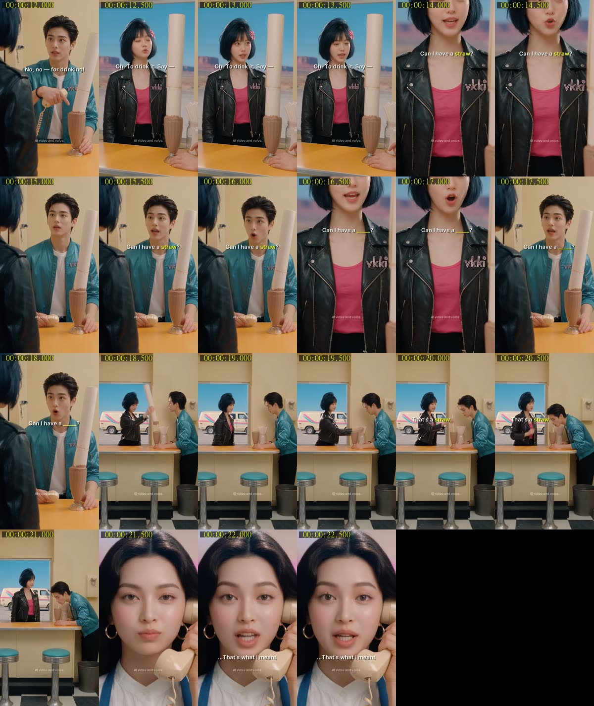